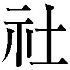

| 「自信が持てない人」の心理学 | |
| 加藤諦三 | |
| PHP研究所 (2010) | |
「自信が持てない人」の心理学
加藤諦三
あなたが自分に満足していれば、他人もあなたに満足する。ところが、あなたが自分に何かを隠していたり、自分を重要な人間と感じられなくて、自分と他人に演技を始めると他人はあなたを受け入れられなくなる。
あなたが心の底の底で、自分について実際に感じていることを自分に隠そうとすることから、すべてはまずくなり始めるのである。
自分が自分をどう感じているかで、人間関係はうまくもいけば、まずくもなる。心の底の底で自分を意味あるものと感じられないでいて、他人に自分の重要性を印象づけようとすると、他人に嫌われる。他人の関心を引こうと虚栄心を持つから、他人に嫌われてしまう。
それにしても、なぜそんなにほめられたいのか？
他人の関心を引こうとするから、本来の自分にさからってしまうのである。そして、本来の自分にさからうから、消耗してしまうのである。本来の自分にさからわなければ、人間関係でも気が楽になろう。
自分をいつわらなくても、本当は、他人はあなたのことが好きなのである。それなのに、気に入られようとして自分をいつわり、消耗する。他人に気に入られるために、特別に何かをしなければならないと感じてしまう。これは、まったくの錯覚である。
しかし、なぜ、そのように錯覚してしまうのか？ なぜ、実際の自分を隠そうとするのか？ そして、どうすればいいのか？ それが、この本のテーマである。
他人の関心を引こうとするから、自分を見失ってしまうのである。自分を見失うから、他人とも親密になれない。
なぜ、そんなに自分を安売りしてしまうのか。あなたが自分を安売りすれば、あなたの回りには身勝手な利己主義者ばかりが集まる。そして彼らは、あなたにある生き方を強制してくる。彼ら自身の心の葛藤を、あなたを所有することで解決しようとする。自分を安売りするあなたの周囲に集まった身勝手な利己主義者達は、本来のあなたをひそかに変えようと企てている。
「私に、あなたの望むような生き方をさせようとするのは、やめてください」とハッキリといえるような人間になるには、どうしたらよいか。それが、この本のテーマである。
それらの利己主義者の気を引こうとしなければ、気持ちは晴れてくる。人生を意味あるものにするためには、こわくても逃げてはいけない。逃げていたのでは、いつになっても気が晴れてこない。「なぜ逃げるのか」をこの本では考えた。
加藤諦三
本書は、一九九五年にＰＨＰ研究所より刊行された文庫『「自分づくり」の法則』を改題、再編集したものです。
私は自分の少年時代や二十代を振り返る時、自分を最も苦しめたのは、悪い人達ではなく、絶えず「立派なこと」をいう人達であったという気がする。
私の身近には、口を開けば「立派なこと」をいう人がたくさんいた。正義、愛情、正直、教養、それらをさかんに口にした。
そして、その人達に私は振り回され、こづき回され、自分を見失い、疲れ果てた。典型的な自意識過剰で、自己不在の人間となって、生きることに消耗していた。
私の回りには、小さい頃から、抑圧の強い人がたくさんいたのである。つまり、心の底に不安を感じながら、自分が不安な人間であるということを認めない人達である。彼らは生きることを怖れていた。しかし、自分が怖れていることを認めることを拒んでいた。臆病でありながら、自分が臆病であることは決して認めなかった。
自分が臆病であることを心の底で知りながら、それを認めることを拒否した大人ほど、子供に大胆で勇敢であることを求める。自分が利己主義者であるという事実を認めることを拒んだ人ほど、他人に対して厳しく利己主義を禁じる。
かくて私は、自分の幼少年時代を精神的死をもって始めることになった。自分を見失い、生きることの無意味感に苦しみ、周囲への気疲れで生きた心地がしなかった。
多くの自己喪失者は、多かれ少なかれ、実際の自分と違った人間になることを周囲から期待され、しかも非現実的なほど高い倫理を強制された人達ではないだろうか。
他人に対する抑圧された憎悪による心の葛藤は、「立派なこと」を主張することによって、一時的に解決される。
口を開けば「教養、教養」と騒ぐ人が、いかに心の底に周囲への憎しみを宿しているか。それは、その人達を観察すればわかることだろう。だからこそ、「あの人は教養がない」とそのような人達が他人を批判する時の眼は、憎しみに燃えているのである。
自分の中にある感情だけれども、自分が認めたくないものがある。すると人は、その実際にある感情を意志の力で無意識の領域に追いやる。それを抑圧という。
抑圧の強い人が「教養のない人」を罵倒するのは、憎しみにかられているからである。しかし、その憎しみは、罵倒する時、合理化される。
抑圧が全般的に深化した人で、「立派なこと」をいう人は、世の中にはたくさんいる。われわれは、その立派な話の内容に反論できず、その人達に支配されてしまうことがある。しかし、抑圧の強い人は「立派なこと」をいうが、その動機は周囲への憎悪であったり、劣等感であったりするのである。
憎しみにかられて、「教養」とか「......べき」という規範を叫ぶ人ほど無教養な人はいないのである。ところが、「あの人は教養がない！」と断言する時、その人は、自分は教養がある、とその瞬間は確信できる。
良心、教養、愛情......これらの「立派なこと」を声高に主張し、「お前には、それでも良心があるのか！」と他人を罵倒する人は、そのように罵倒することで、自分のうちに隠された憎しみを少しでも解消しようとしているのである。
もちろん、その人は、自分が憎しみにかられてそのように「立派なこと」を主張しているとは思っていない。自分こそ「良心の人」「教養の人」「愛情の人」と確信している。しかし確信している主体が空洞化しているので、他人に自分の確信を保証してもらう必要がある。そこで、それらの「良心の人」「教養の人」「愛情の人」は、同じ種類の人、つまり抑圧の強い人と一緒になって、他人を非難し始めるのである。
家族が一団となって、そのような集団を形成していることもあるし、宗教などで狂信的な集団を形成する時もある。「お前は愛情がない！」と相手にむかって絶叫しつつ相手を罵倒する人ほど「愛情のない」人はいないであろう。
そのようなコンプレックスを共有した家庭からは精神障害者が出るし、狂信的な宗教集団からはさまざまな悲劇が生まれる。このような集団にあっては、すべて現実は歪曲して受けとられる。
心に不安や憎しみを抑圧しながら、「立派なこと」をいう人達に囲まれて生きてきた私に、わかったことがある。
それは、人の話を聞く時、その内容にばかり気をとられてはいけないということである。「なぜそのようなことをいうのか」という話す人の隠れたる動機に眼をむける必要がある、ということである。
「立派なこと」をいう人の「隠れたる真の動機」に注目することができないで、病んでいった人は多い。
私がラジオでやっている「テレフォン人生相談」に、ある人が電話してきた。五十歳の父親である。彼は「子供が小さい頃から道徳はきちんと教えました」という。よく聞いてみると、まさに、これでもか、これでもかという「べき」論なのである。そして、その子供達は犯罪に走ってしまい、奥さんは逃げ出してしまった。
五十歳になる父親は、なぜこうなってしまったのかわからない。彼が妻子にむかって「立派なこと」を叫んだことの「隠れたる真の動機」に、父親は気づいていない。気づいていないけれども、周囲はたまらなかったのであろう。愛を主張した父親の「隠れたる真の動機」は憎しみだったのである。教養を説いたその人の「隠れたる真の動機」は劣等感だったのである。
自分の主張しようとすることの内容の立派さに酔って、自分の「隠れたる真の動機」に気づいていない人は多い。
この父親は、自分では子供の道徳的しつけについてはことさら注意を払ってきたのに、となげくが、実は子供のあら探しをして、それを見つけると、なじることで自分の心の中のうっぷんをはらしてきたのであろう。
自分の人格にしみこんだ憎しみ、恨みに、この父親は気づこうとせず、他人を追及することに、その発散を求めていたのである。その結果、ついに奥さんにも逃げられてしまったのである。
ところで、相手があまりに「立派なこと」をいうので、反論できずに、ついつい不本意ながら相手に引きずられてしまうということがある、と前にもいった。そんな時、相手の主張する内容に反論しようとしても無理である。それよりも、「あなたは、その立派なことを主張することによって、いったいあなたの中の何を自分と他人に隠そうとしているのですか？」と質問することである。
自分を最も苦しめたのは
悪い人達ではなく、
「立派なこと」をいう人達
であった。
抑圧の強い人には、人々は「さわやかさ」を感じない。立派な人であり、にこやかな人であるのだけれども、本気でつき合おうとすると、どうしてもどこかに心の冷たさを感じてしまうのである。
にこやかに人に接しながら、最後のところで人から逃げている。笑顔で接しながら、心の底で人を避けている。「愛こそ人生」と説きながら、いざというとうちとけない。温かい言葉をかけるのだが、どこか不自然さがある。
実は、うちとけようにも、うちとけるべき自分がないのである。本当の自分を抑圧してしまった人は、「立派な自分」は残ったが、同時にそれは自分にさえ実在感のない自分なのである。うちとけようにも、どううちとけてよいのかわからないのである。
そこで、その人とつき合う人は、どうしても冷たいすきま風を感じてしまう。本当の自分を抑圧して、空洞となった人と面とむかっているのであるから、すきま風を感じてあたりまえである。笑顔があり、温かい言葉があり、立派な主張がありながら、その人は透明人間のようにすきとおっている。それは、抑圧のもたらした自己空洞化なのである。
抑圧は拡大深化する。我執の強い親によく思われようとして、親との関係で都合の悪い衝動を抑圧すると、それだけではおさまらない。それ以外のいろいろな感情を抑圧する。かくて、空洞化した人間ができあがる。
我執の人に育てられた人は空洞化する。しかし、我執の人というのもまた抑圧が拡大深化し、自己空洞化した人なのである。自己に執着しているが、その執着すべき自己は、実をいうと不在なのである。
本当に大切にしたいものをもっていれば、自己執着型の人間にはならない。空洞化した自己に執着しているのが、我執の人、自己執着型の人なのである。だからこそ、他人が自分をどう見るか、ということを気にするのである。
自己執着型の人間は、他人の眼を中心にさまざまな悩みをもつ。そして時に、他人なんかどう思ったってかまわないと居直る。しかし、それだけで悩みは解決しない。
抑圧からの解放、これが自己執着型の人間の悩みの真の解決の第一歩であろう。真の自己を獲得した者は自己に執着しない。
集中する、ということは、自己を忘れることである。対象にむかって全力を集中する。失敗したらどうしよう、などと思わない。自己の実在する人は、ものごとに集中できる。
実際の自己を抑圧してしまった人は、集中しよう、集中しようとしながら、集中できない。
なぜなら、集中すべき自己がないからである。集中すべき自己は抑圧されているのである。あるいは、ある抑圧によって抑圧が拡大深化し、自己が喪失したといってもよい。
眠ろう、眠ろうとしながら、眠れないとなげく不眠恐怖症も、眠るべき自己がないのに眠ろうとしているのである。そう考えると、うつ病者が不眠に悩まされるのがよくわかる気がする。自己の他者化が進んで自己不在なのであるから。つまり、自分を他人の期待に合わせることで、自分がなくなってしまっているのである。――自意識過剰の自己不在。
他意識過剰の他者不在という人もいる。他人がどうしたか、他人が何をいったかと異常に気をつかう。他人のささいな言動に敏感に反応する。ところが、他人への思いやりはゼロなのである。
他意識過剰の他者不在の人に、人々が冷たさを感じるのは当然であろう。こちらのささいな動きから、他人が自分をどう思っているか、ということをおしはかろうとのみしているのである。その人の関心はそれ以外にないのである。こちらがどのような人間かということは、まったく関心がない。こちらが他意識過剰の他者不在の人とうちとけようにも、むこうがわれわれの存在に関心がないから、うちとけられない。
自意識過剰の自己不在の人も、他意識過剰の他者不在の人も、いわゆる冷たい人である。どんなに善人そうに振舞って「立派なこと」をいっても、うちとけあった友をもたない。心を開いて語り合う恋人も妻もいない。
そう考えてくると、人間的温かさとは、何のことはない、自我が確立したことにほかならない。真の自己を獲得した人こそ、心の温かい人なのである。
このことがはっきりわかっていないからこそ、この世の中には悲惨な涙を流している人々がいるのである。つまり、他人に対しては善人そうに振舞い、立派なことをいっていながら、弱い者をいじめている心の冷たい人がいるということである。いじめられている人が、それを訴えようにも回りの人々は信じてくれない。なぜなら、その人が立派な人と周囲の人々には思える場合があるからである。
立派そうな親に育てられた悲惨な子、そしてその子も歪んでいるが故に、また弱い立場の人間に対して加害者となっていく。悲劇はくりかえされる。いじめられっ子は、状況によっていじめっ子に変わる。殺され屋は、状況次第で殺し屋になる。
自分を他人の期待に
合わせることで、自分がなくなって
しまっているのである。
私は、心の温かい人と冷たい人とを見分けるのに、その人の言葉をあまり基準にしない。今まで述べてきたことで、どんなに「立派なこと」をいっている人でも、心の冷たい人がいることがわかる。憎悪にかられて「立派なこと」をいっている人だっている。こういうことは、その人のやっていることでもわからない。
毎日おみやげを家にもって帰り、休みには家族を旅行につれていくような立派な行動をする父親でも、中には心の冷たい父親もいる。恩きせがましさで子供の心を息苦しくさせてしまう。父はそうと知らずに子供の精神を殺している。
慈善事業をしていても、それだけでは心の温かい人と私は思わない。もちろん慈善事業は「立派なこと」である。今はその点について話しているのではない。自分を立派に見せるために、慈善事業をする人もいるのである。
私が温かい人と冷たい人を見分ける基準は、その人が胸襟を開いて語り合える人をもっているかどうか、ということである。それが友人であろうと、恋人であろうと、妻であろうといい。誰であっても、とにかく心を開いてうちとけ合える人をもっているかいないかが、心の冷たさと温かさを見分ける私の基準である。
「立派なこと」をいわなくても、またやっていることを見るとあまり立派であるとばかりいえなくても、心の温かい人はいる。良い子、良い生徒、善良な市民でも、心の冷たい人はいる。
それは他人にはわからないだろう。もし、われわれが一日二十四時間その人を観察していれば、善良なる市民の行動の中にも頭をかしげることがあるかもしれない。しかし、われわれは他人を一日二十四時間見ているわけではない。
過ちをおかす人もいるし、おかさない人もいる。しかし、過ちをおかさない人が心の温かい人で、過ちをおかした人が心の冷たい人というのでもないであろう。
我執の強い親に所有されて育った人がいる。自意識過剰で自己不在、他意識過剰で他者不在、親を怖れて幼児的依存心を四十歳になってももっている人がいる。その人は親を怖れて幼児的依存心をもつ故に、親の社会的体面をけがすようなことは決してしない。つまり、社会的に過ちをおかさない。
そして、過ちをおかした人を見ると、抑圧からくる怨念で凍るような冷たい眼で糾弾する。過ちをおかしたか、おかさないか、ということと、心の温かさ、冷たさとは違う。
立派であるとばかり
いえなくても
心の温かい人はいる。
良い子、良い生徒、
善良な市民でも、
心の冷たい人はいる。
私から見て心の温かい人と父親についての話をしていた時である。その人の父親は亡くなってから、もう三十年以上もたっていた。私はその人に、亡くなった父親について聞いた。すると、ぽつんと、
「憎しみしかないね」といった。それ以上聞かなかったが、この父親も立派なことをいい、社会的体面を保っていたことが、私には想像できた。
しかし、自分の亡くなった父親に、「ひどいこともいってたし、立派でないこともしてたけど、死んでみると懐しいなあ」という気持ちをもつ人もいるであろう。心の温かい父親と心の冷たい父親の差なのである。肉親に限らず、別れてから懐しさを感じるのは、その人の心の温かさ故でなかろうか。
いかにも豪放らしく振舞う人の中には、自意識過剰な人も多いであろう。いかにも温かそうに振舞う人も、自意識過剰で心の冷たい人である場合も多い。
温かさというも、人間的魅力というも、実は先に書いたように平凡なことではなかろうか。魅力とか温かさというと、何か特別のもののように感じるが、人格の統合性というか、自我の確立というか、自己発見というか、それだけのものであろう。自我が確立された人は魅力があり、温かくもあるのであろう。
人格、人格と人はよくいう。しかし、人格とは、いったい何であるのか？
人格とは「温かさ」である、と私は思う。依存心の強い人は、どのように表面をとりつくろおうと「冷たい」。依存心の強い人は、たとえどのように表面をとりつくろおうと、相手が自分に「役立つ」ことを求めている。
冷たい男というのがいる。上役や部下ばかりではなく、妻子まで利用しようとしている。妻子まで自分に役立って、はじめて妻子と感じている。友達なども「役立つ」ことでしか、意味をもたない。
依存心の強い人は、関係そのものを楽しめないから、相手が自分に「役立つ」ことを求めるのである。友達と酒を飲むこと自体が楽しければ、もはやそれ以上のことは友達に求めない。家庭そのものが楽しければ、それ以上は妻子に求めない。しかし、家庭そのものを楽しめないから、妻や子供も自分の金もうけに役に立つか、自分の社会的体面を維持するのに役立つかしなければ彼には妻子も意味がない。
要するに、依存心の強い人は、友達も、妻子も、上役も、部下も、恋人も、ありのままに受け入れていないのである。そして同時に、受け入れられてもいない。彼は相手を所有する。従って相手は所有されているだけである。
依存心にとって可能なことは、所有―被所有、支配―被支配の関係である。支配する人と服従する人の関係が、依存心にとっては心地よい関係なのである。他人を所有しようとする人は、心の底に敵意と恐怖を宿している。
依存心にとって居心地が悪いのが、愛とか尊敬とかいう関係である。従って、対等の友人がなかなかできない。上役に服従したり、子供を支配したり、という上下関係はできても、対等の同僚と親しい関係ができない。
自分の幼児的依存心を、愛情と錯覚する親がいる。自分は子供なしに生きていかれないから、子供を「愛している」と信じているのである。
ある親は子供が死んだ時、何週間も寝こんでしまった。そして、自分は他人以上に子供を愛している愛情の人と信じた。彼は自分の所有物を失ったことによって悲しんでいるとは思えなかったのである。
その証拠には、ある人がその人に死んだ子供の想い出を聞いた時、何も語ることがなかったことである。もし本当に愛していたら、「あの子は、あの木の下で、こんなふうに遊んでいた」「あの子は、こんな時、よくこういったものだ」など、いつまでも語ることはあるはずであろう。
彼が死んだ子について語ったことは、「数学がよくできた」ということだけであった。
依存心が強く、氷のように心の冷たい人がいる。そして自分より弱い立場にある人を「所有」し、「愛している」と錯覚する。
大切なことは、人格とは「温かさ」であるという理解である。
彼は相手を所有する。
従って相手は所有されて
いるだけである。
昆虫をはじめ多くの節足動物は、体の表面に固いキチン質の皮膜がかぶっている。これが内部の軟体の自由な発育をいちじるしくさまたげている。
つまり、エビやカニのような節足動物は脱皮ごとに飛躍的に成長する。（岡田要、『動物の親と子』、新潮社刊）
人間の場合キチン質の皮膜にあたるのが抑圧であろう。エビやカニの場合には、自然の成長のなかで脱皮がおこなわれるが、どうやら人間の場合には、抑圧が強すぎて脱皮がおこなわれない場合があるようである。
そして、脱皮のおこなわれない心の持ち主が弱い立場にあると、神経症になったりする。また、脱皮のおこなわれない心の持ち主が強い立場にあると、「図々しさ」「狡猾さ」「厚かましさ」などをもつ、いわゆる冷たい人間になるのではなかろうか。
図々しさ、狡猾さ、厚かましさは、対人恐怖のひとつのあらわれ方なのである。普通に他人に接することができなくて、こうなるのである。厚かましく、図々しい人間が、時に知人に対して妙に気がひけていたりするのを観察できる。
丸山眞男氏（東大名誉教授）の「軍国支配者の精神形態」（未來刊『現代政治の思想と行動』所収）に、極東軍事裁判のことが書かれている。その中で判事が次のように述べる箇所がある。
「われわれは行動というものに対して関心をもっているのであって言葉には関心がない」
実際の人間関係を考えるのには必ずしも裁判通りいくものではないが、右の判事の関心のもち方は、人間関係を考える時、参考になる。
われわれは、口ではどんな立派なことでもいえる。
「俺は自分のことなんかどうでもいいんだ、皆さえよければ」
「私はあなたを愛している。あなたのためなら死んだっていい」
これらの内容が立派とは思えないが、行動のともなわない人間は、この種のことを立派なことと錯覚してよくいうものである。立派でないというのは、これらの言葉は当の本人の依存心をあらわしているからである。
ところで、内容の立派、立派でないは別にして、この種のことをいう人は、たいてい行動しない。
「俺は自分のことなんか、どうだっていい」
といいながら、実際の行動は利己主義に徹している。「自分のことなんか、どうだっていい」なら、自分の財産を経済的に困っている身内に分けるかというと、決してそのようなことはしない。実際の行動においては、他人から搾取していながら、「俺は自分のことなんか、どうだっていいんだ」というのである。従って、他人を判断する時、その言葉で判断してはいけない。
「俺は自分のことなんか、どうだっていいんだ」といった人が、現実に自分のあり余る財産を、経済的に困っている友人や親戚の人に分けてあげるのなら、信用してもいい。しかしこのように極端なことをいう人は、たいてい普通の人以上に利己主義の我利我利亡者である。つまり、誇張された愛他主義の表現は、自分の中に愛他主義の精神が欠如していることをあらわしている。他人のために何かすることができない人間が、自分のその欠点を自分から隠そうとする。その反動形成が「自分はどうだっていいのだ」という表現となってあらわれるのである。
従って、この種の表現を好んでする人の過去を調べてみればわかる。いっていることとは裏腹に、たいして勤勉に働いてもいないくせに、大財産を築いていたりする。つまり、ずるく立ち回って、他人をごまかしながら財産を築いているのである。
そして、始末の悪いことは、そういう本人が自分の言葉を「信じ」ていることである。もちろん心の底の一番底ではウソとわかっている。それだけに、余計、他人が自分の言葉を信じることを要求してくる。
自分の愛人にむかって、「死ぬほど愛している」などとオーバーに愛の表現をする男は、女房と別れるという行動はしない。自分の家庭生活には何の変化ももたせないまま、愛人との関係をうまくやろうと望んでいる男が、このようなオーバーな愛の表現をするのである。
ところが、始末の悪いことに、このようなオーバーな愛の表現を深刻ぶって苦渋にみちた表情でする男は、自分では本当にそのつもりになっている。彼はずるく、うまくやろうとは意識していない。うまくやろうと望んでいるのは彼の「無意識の」部分なのである。
自分の「ずるさ」を抑圧して、その反動形成から、このようなオーバーな表現になる。自分のずるさから眼をそらし、自分は「愛の人」と「確信」している男は、このような表現をする。
女性にしてみれば、大切なのは先の判事の発言である。
「私はあなたの行動というものに対して関心をもっているのであって、言葉には関心ありません」
と女性はいうべきであろう。
ところが、女性の側はあまりこうはいわない。おそらくこのようにいって自分が望むようには愛されていないのだ、ということが明らかになるのを怖れているのであろう。かくて、その場その場の情勢に引きずられて、ずるずるべったりの深みにはまっていく。男性の側にも女性の側にも、責任意識が稀薄なのである。
だいたいにおいて、オーバーな表現をする人間は、自分の言葉に責任をもたない。
「俺はお前を死ぬほど愛している」
相手の女性との将来の生活に対してきちんとした計画をもっている男性なら、こんなに愛情を誇張して表現はしない。女性に対して誇張した愛の表現をする男が第一に求めているのは、小市民としての安泰な生活である。それに退屈した時に、自分の安泰な生活に空想的改革案をもつ。しかし、臆病で行動はできない。その矛盾を、誇張した表現で乗りきろうとしているのである。
「隠れたる真の動機」が、憎しみや冷酷さでありながら、誇大な愛の表現をする。そして、その犠牲になる人もいる。この時、悪いのは真の動機を自分にも相手にも隠して愛をささやく人間である。ただ、すべての人がこの種の愛の表現にだまされて苦しむわけではない。
その種の愛の表現にまいってしまうのは、やはり、その人の心に弱点があるからである。
もし、その人がナルシシストでないならば、相手の愛の言動に、「何かウソがある」と感じとるものである。「隠れたる真の動機」というように言語化できなくても、年齢相応に情緒的成熟をしている人なら、何かウソを感じとるものである。
ところが、ナルシシストは、自分をそのように誇大な表現でほめてくれる人がいるとまいってしまう。自分のナルシシズムを満足させたがっているというような人間は、相手の「隠れたる真の動機」を見抜けないで、犠牲になってしまうことが多い。
他人を判断する時、
その言葉で判断してはいけない。
まったくの無欲な顔をしている人間の中に、恐るべき強欲な人間がいる。恐るべきほど強欲な人間でない限り、まったくの無欲な顔はしないものである。そのような人間は、自分にさえ自分の驚くべき強欲を隠している。従って、自分でも自分は無欲のつもりでいる。自分にも他人にも無欲の「ふり」をする。
普通の人間は、人間にとってのあたりまえの欲は認めて行動する。お互いに認め合って行動する。今のような世の中で、一〇〇％利害を無視して一日二十四時間行動し、しかもそれを生涯の終りまで実行できるというようなことを普通の人はいわない。
ごく普通の人は、利害も無視しないが、利害をはなれて愛情だけでも行動する。あるいは、一見、利害から出たと見える行動でも、その中に愛情もまた含まれている。また一見、愛情だけから出たと思われる行動の中にも利害を考えたところがある。
しかし、世の中には、親兄弟はもちろん、夫婦であろうが、友人であろうが、完璧なまでの不信を心の底にこびりつかせ、自分だけの利害のみ考えて行動していながら、「俺のように無欲な人間はいない」といっている人もいる。
この人は、自分は極端なまでに強欲な人間であって、世界中の人間を誰も信じていない人間であるということを心の底の底では知っている。しかし、そのあまりの強欲さを心の中で意識しないためには、自分は完璧に無欲な人間であるという、極端なイメージを必要とする。それが反動形成である。それでなければ、心の中のバランスが保てない。
自分にも他人にも無欲な顔をして、自分の強欲を通そうとする人間と話し合うことはできない。よく政治家が強欲だという。権力の亡者であるという。しかし、私は、このような人達のほうが、今述べてきた人達よりはるかによいと思う。
彼らの場合お互いに、人間は欲で動くということを認め合って行動しているのであるから、そこには欺瞞がない。
商売は相対のだまし合いだ、ということを聞いたことがある。それはそれでよい。お互いに、そう覚悟して商売しているのである。しかし一〇〇％慈善事業のように、自分にも他人にも思わせながら金もうけをする人がいる。
俺もお金がほしいし、お前もお金がほしい。でも、俺だってお前だって、それだけじゃ淋しい。俺だってお前だって、これはゼニ金の問題じゃないんだ、と心意気でやることもしたい。お互いにこのように認め合い、許し合ったうえでなければ、友人として理解し合うことができないのではなかろうか。
まったくの無欲のような顔を自分にも他人にもしているが、実は強欲な人とは心を開いて語り合うことも、理解し合うこともできない。なぜなら、彼らは話し合いの中で、自分は強欲であるという事実に直面することは避けるからである。彼らにとって話し合いとは、そのことを避けるための話し合いなのである。
彼らがほしがっている友人とは、自分がいかに無欲であるか、ということを自分にむかって証明してくれる人である。さらには、自分以外の人間がいかに強欲であるかということを証明してくれる人間である。孤独に苦しみながらも、心を開いた友人のいない人たちは、このように自分の抑圧を助けてくれる人を求めている人である場合が多い。
孤独な人の中に、心温かい人をことさら避ける人がいる。心温かい人は、自分に本当の自分を気づかせてしまう可能性があるからである。孤独な人が、どうしてか心冷たい人にひかれていく時がある。いやむしろ、孤独な人は心の冷たい人との接触ばかり求める、といったほうがよいかも知れない。それは、自分に関する事実で、どうしても自分が認めたくないことがあるからである。
彼らが心の冷たい人を求めるのは、心の冷たい人といる時は、自分をだましつづけていられるからである。
自分は情だけで動いているような顔をしている人に、血も凍るような無情な人が多いのも同じことである。フロイトの指摘を待つまでもなく誇張は欠乏の証明である。自分は血も涙もない人間ということを心の底では知っている。
しかし、どうしてもそれを意識したくない。そのために、「俺くらい情の深い人間はいない」「俺くらい情だけの人間もいない」と絶えずいっていなければならない。この人にとって最大の問題は、自分が血も涙もない人間であるという事実を、いかにして自分と他人に隠すか、ということである。
話し合っているうちに、そのことを認めざるを得ない立場に追いこまれれば、激しく反発する。決して認めない。相手を激しく憎む。そして、相手を「実にいやな奴だ」というようなことをいう。結果として、心を開く友人は一人もできない。
われわれは、強欲だろうが、無情だろうが、心を開く友人はつくれる。自分が強欲である、自分は無情であると認めさえすれば、友人はできる。心が冷たい人間だって、必ず友人はできる。
なんで心が冷たくて友人ができるのか、という疑問も出てこよう。しかし、人間の中で欲だけの人とか、完全に情の欠如した人などというのは極めて少ない。自分の中にある冷たさを認めることを拒否することは、実は温かい情の働きを禁じてしまうことになるのである。
他人と親しくなるのに、冷たいこと、利己主義なこと、欲ばりなことなどが問題になるのではない。自分に関するそれらの事実を自分が認めないことが、他人と親しくなることに障害となるのである。
ありのままの自分を受け入れられない人は、ありのままの他人を受け入れることができない。自分で自分を拒否してしまった人は、他人をも拒否する。
誰であったか、著者の名前は忘れたが、旅について次のような体験を書いていた。
旅を企画する時は楽しいのであるが、その日が近づいてくるにつれて、次第に不安な暗い気持ちになる、というのである。出発の日が近づくにつれて、どんどん行くのがいやになるというのである。その理由は、自分の生存の基盤である家を出るということで、自分の生存の基盤にひび割れが起きるからだ、という。
旅に出る時の心理については、私自身も同じ心理を味わっていた時があったので、よくそのことを覚えている。しかし、その理由については、どうも納得がいかなかった記憶がある。
では、なぜ旅に出る時、不安な暗い気持ちになるのであろうか。
ウォルマン（児童心理学の権威。ロングアイランド大学教授）が『子どもの恐怖』（作田勉訳編・誠信書房刊）の中で、広場恐怖について次のように説明している。
親に寂しい気持ちがあり、自分の恐怖や不安を軽減するために、子供にそばにいてほしいと考えている時、子供が広場恐怖症になることもある、というのである。
ところが、親の側は自分がこのようにして子供の心を縛っているということに気がついていない、という。親は子供にしがみつきながら、それを子供への愛情とさえ錯覚している場合が多い。
父親がいつも不機嫌であったり、暴力的であったりすると、子供は母親を気づかう。男として挫折した父親が、その不満を母親にむけて母親に辛くあたっていたりすると、子供は母親を一人残して外に出ることに罪悪感をおぼえる。
ウォルマンは役割逆転という言葉をつかっている。親の役割が子供を気づかうことであるのに、逆に子供が親のことを気づかうようになってしまう。
子供はそのような時、外へ出るのを嫌がるようになり、本当の感情がどのようなものであるかわからないで、単に広々とした場所にいることが恐ろしいと信じこんでしまう。
ウォルマンは、母親の死後、重篤な広場恐怖症におちいった少女を治療したことがある。その少女は、父親を一人でほうっておくのが恐ろしかったという。つまり、広場恐怖症の子供は、自分が家から出るのが恐ろしいといわずに、母親と一緒にいたいという。
ウォルマンによれば、広場恐怖症は、自分が家にいない間に何か恐ろしいことが起こるかも知れないという恐怖の置きかえであるという。
旅に出る時、何か不安な暗い気持ちになるということについても、同じような心理なのではなかろうか。広場恐怖症ほど重篤な情緒の歪みではないが、子供時代の家を離れる恐怖がその人の心の中に残っているのではなかろうか。
家庭が安心とやすらぎの場である子供は、家を出ることに不安はないであろう。しかし、父親が母親をいじめたり、母親が子供に当りちらしたりしているような家庭では、子供は外へ出る時不安であろう。自分のいない間に、何か恐ろしいことが起こるかも知れないと心配になるのは当然である。
広場恐怖症の場合、親が根本的に態度を変えることで驚くほどよくなるケースもしばしばあるという。母親が自信をもって行動するようになると、それまでは母親を一人残しておくことを怖れていた少年が、広い場所に行くことを恐ろしがらなくなる場合もあると、ウォルマンはいう。
大人が旅に出る時、何か気がすすまなくなるというのも、子供の頃の家庭の不安が残っているからではなかろうか。大人になっても、自分のいない間に何か恐ろしいことが起こるかも知れないという不安が、完全には脱けきらないのではなかろうか。
親が不安や葛藤に苦しんでいると、子供の言動に、親の隠された不安や葛藤が反応してしまう。そのような親は、子供の何げない言葉で急に怒り出したり、不機嫌に黙りこんでしまう。それまで機嫌のよかった父親が、「○○ちゃんの家、今度、車買ったんだよ」といったとたん、仁王様のような顔になって黙ってしまったり、そういった子供をにらみつける。
父親はその子供の一言で、車の買えない劣等感を刺激されたのである。いずれにしても、家の主権的人物の機嫌がまったく予期できず、コロコロ変わる家庭には、不安な雰囲気があろう。そんな家庭に心やさしい子供がいるとしたら、心配で家を出られないということは起きてくる。
これが重篤な場合は、広場恐怖症にまでなることもあろうが、そこまでいかない場合もあろう。子供の頃から家を安心してあけられない、そんな人が成長してから、旅に出る日が近づくにつれて不快な気持ちになるのではなかろうか。
なぜ旅に出る時、
不安な暗い気持ちに
なるのであろうか。
広場恐怖症が、広場に行くのが恐ろしいというよりも、家にいたいというのが本質のように、旅行不安も、旅行に出るのが恐ろしいというよりも、家にいたいということに本質があるのだろう。
旅行そのものに行くのがいやというのではなく、旅行に行くために家をあけることが不安なのである。
小さい頃できあがった感情は、なかなか消えるものではない。小さい頃、母親を一人で残して家を出ることに罪悪感をおぼえた者は、大人になっても、仕事以外で外に出る時には罪悪感をおぼえる。
心のやさしい子供でなければ、親を気づかうというようなことはないだろう。役割逆転ということは、心のやさしい子に起きることに違いない。
父親の横暴に苦しんで、母親が子供にいつもこぼしていたらどうなるか。やさしい子供は母親を気づかうようになる。しかし、すべての子供がそうなるわけではない。「お母さん、そんなこと相談されても私には荷が重すぎる」という子もいるだろう。そのような例を私は知っているが、そういった子は大人になって恐怖症にはならない。
私は外に出て行くのに罪悪感をおぼえるのは、このような場合だけではないと思っている。一般的には、親が情緒的に未成熟で子供にしがみついている時に起きてくるのではなかろうか。ひとりぽっちの母親を一人残して家をあける時には、もちろん子供に罪悪感が出るであろうが、そうではなく家族が皆そろっている場合でも、外に出ていく子供に罪悪感が出てくる。
外とのつき合いを断って家族内のつき合いだけが最高という息づまる様な家だって同じことであろう。このような息づまる家庭は、どうしてできるのだろうか。
おそらく家の主権的人物が外で挫折している時であろう。男として外の世界で挫折し、しかもその挫折を認められない父親が「仕事なんかくだらない」と主張し、挫折した自分を守る価値観として家庭をもち出してくる時である。
親は自分を防衛するために、家を必要としている。傷ついた自分の虚栄心を満足させるために、子供からの賞賛を必要としている。
親は心の葛藤と不安に苦しんでいる。外の世界で挫折しているから、外の世界に心を開く友人がいない。その孤独を家庭でいやそうと家にしがみつく。子供に心理的に依存してくる。
そんな家で育った子供は、やはり一人で家をあけることに罪悪感をもつであろう。
寂しい親は、自分の孤独感をいやすために、子供に常に家にいてほしいと願っている。子供は親のその期待を感じとる。親の期待にそむく時、罪悪感は生まれる。
大人になって、そのような感情には理由がないとわかっても、心の中に不安は残る。それが旅に出る日が近づくにつれて、心は苦しくなるということではなかろうか。その人は、大人になっても、まだ心理的に小さい頃の家庭に縛られているのである。
ウォルマンは、広場恐怖症ではなく学校恐怖症についても、同じようなことを前掲書の中でいっている。つまり、そのような子は学校がこわいのではなく、母親と一緒に家にいたいということなのである。学校に行っている間に、何か起こりはしないかと心配し、家から離れることを恐ろしがるという。これが今の日本の不登校児にそのままあてはまるかどうかはわからないが。
不安定な親を見て、子供は親が分離を怖れており、自分が一緒にいる必要がある、との印象を抱く場合があるとウォルマンはいうが、その通りであろう。もちろんこの場合も、親の真の気持ちを察して役割逆転するケースは、心やさしい子供について起きることだろう。
親は、自分では家庭を大切にする立派な親だと思いながら、無意識に子供にしがみついている。子供は親の隠された要求を感じとる。そして親のいる家を離れることに罪悪感をおぼえる。
父親がいつも外の世界の現実での出来事についてなげいている。外の世界の現実について耐えられないような男であるという印象を子供はもつ。外の世界がいかにたいへんかと、泣き言ばかりいっている弱々しい父親と子供の間では役割逆転が起きる。
そしてそれは親子両方の情緒的成熟について障害になる。役割逆転した中で育った子供は、大人になって自分が家庭をもつようになっても、小さい頃の感情を残している。仕事以外のことで家をあけることに罪悪感をもつ。
このような人には、「亭主は達者で留守が一番」などということは、思いもよらない。休日など狭い家にゴロゴロしていられるより、外に出ていてほしい、と奥さんがどんなに感じていても、ご主人は外に出るのが不安である。ゴルフに行くのを奥さんが喜んでいても、その日が近づいてくるとご主人は重苦しい気分になる。
奥さんは、昔の母親のように強い不安に悩まされ、家に一人でいることを恐ろしがっていなくても、ご主人は家に逃げこもうとする。小さい頃、家をあけていると、自分のいない間に何か悪いことが起きるかも知れないという心配は、大人になってもついて回っている。
確かに子供の頃は、快適で安全な雰囲気のない家庭だから、そう感じるのも無理ないことかも知れない。ところが、成長して大人になって、異なった雰囲気の家庭ができても、何か悪いことが起きるかも知れないという心配はついて回る。
それは、快適で安全な雰囲気の中で子供の自我は成長するのに、それを欠いたところで育ったからである。つまり、その人の情緒は十分に成熟していない。大人になっても、心理的には小さい頃の家庭に縛られているからである。
解決は、その人が、このように気がつくことである。しかし、気づくためには親から心理的に離乳していなければならない。親から心理的に離乳していないと、自分の親をこのように意識化することができない。
親の真の気持ちを察して
役割逆転するケースは、
心やさしい子供に
起きることだろう。
何か生きることを楽しめない、ということには、やはり原因があるに違いない。
ウェインバーグ（アメリカの精神分析医）の書いた初期の作品『アクション・アプローチ』という本を読んでいたら、次のような老人の話が出てきた。
その老人は、妻を失って六ケ月後に、ウェインバーグに会いにきた。老人は妻のことをひっきりなしに考えてきたと話した。老人は人々から完全に引っこんでしまった。娘が結婚していたが、その娘達を訪ねることもなかった。老人はウェインバーグに「何のために生きたらよいか」とたずねた。
彼は老人に「かつてはどんなことで楽しんだか」を聞いた。老人の関心の範囲は狭かった。家庭のこと、時たまの外食、年一回の休暇などであった。
配偶者の一方が亡くなった時、残されたほうが人生を楽しむ十分な能力をもっていないというのは、大きな問題である。
妻を失ったあと、老人は何度も友人から電話をもらった。何年もの間、同じ年配の何組かの夫婦と親しくしていた。妻の死後、彼らが夕食にさそってくれるのである。老人はこれらすべての招待を、ふさぎこんで断わってしまった。そして、かかってくる電話もだんだんと少なくなってきた。
「なぜ彼らに会わなくっちゃならないんです？」と老人はウェインバーグにたずねた。友人達が電話で妻のことを話そうが話すまいが、老人はいつも電話で亡妻のことを考えてしまうという。そして電話を切ったあと、電話をもらわなかった時以上にふさいだ気持ちになってしまうという。娘達も、いつも亡妻の話をした。老人は妻が亡くなってから、それぞれの娘達を一回しか訪ねていない。それぞれ訪ねた時は妻の話が出て、老人は陰気になってしまう。
老人は以前よく探偵小説を読んで楽しんでいたが、妻が亡くなってからは一冊も読んでいない。妻が生きていた時、老人は休暇をとったり、孫達のところにプレゼントをもって遊びにいったり、いろいろと楽しんでいた。しかし今ではまったくふさぎこんでしまった。
老人は、「親しい友人が妻のことを話さんでくれたらいいのに」といった。そこでウェインバーグは、「あなたは、彼らの誰かに、しばらくは彼女の話をしないでくれと頼んだのですか？」と聞く。すると、老人は蒼くなって怒り出した。そして「そんなことは絶対にせんぞ」といった。彼は一瞬、その老人が怒りでオフィスを飛び出すのではないか、と思ったほどであったという。
老人は、とにかくそんなことを頼むぐらいなら、全然会わないほうがましだ、といった。そして、老人の眼には涙がうかんだ。その一分後ぐらいに「彼らの家をみただけで意気消沈してしまうのだ」といった。つづいて再び「妻のことを話さんでくれ、などと誰にも頼んだりできんよ」といってすすり泣いた。
なぜそれが頼めないのか、とウェインバーグは老人にたずねる。
「私たちはあなたがそれをできない理由を見つけなければいけないのです。その理由はおそらく重要です」
再び老人は怒る。「そんなことはせんぞ」と怒る。そしてそのあと次のようにいう。
「私はあんなところに出かけていって楽しく過ごしたいなどと望んですらおらんのだ」――正確なニュアンスを伝えるために、原文を書いておこう。
I don't even want to have a good time up there.
つまり、楽しい時をすごそうと望んでいないのである。なぜか？ 何回かの面接で、いろいろのことがわかってくる。
妻の死後、生活を楽しむのは彼女の思い出を冒涜するものだ、という強い信念がひそんでいた。楽しむことは裏切ることに感じられていた。老人を支配していた原理は、妻がもはや自分と一緒に楽しめない以上、楽しむのは何か悪いことだ、というものであった。
楽しいことをしてはならないという原理に支配されて、その人は生活上のいろいろな選択をしていた。そしてそのような選択をすることによって、その原理の正しさをいよいよ確信していった。やがては隠者のような生活になっていく。実のある生活は妻の思い出を追い払ってしまうという信念になる。
ウェインバーグは、その人に、妻をなつかしがることと、自分が生きていることを楽しみつづけることの間には、何の矛盾もないのだ、と感じさせることに成功していく。奥さんはその人が楽しむことを望んでいたのではないか、と思わせるのである。
さて、楽しいことに飛びつくのは不誠実だという前提を、心のどこかにもっている人は案外多い。それが証拠に、いろいろな楽しいつき合いを、何と多くの人が「仕事」といういい訳をしているだろうか。そういう私自身、普通の人以上にこのような前提があったようである。
なぜか、楽しいというだけでは、そのことをしていることが許されないような気がしてくるのである。実は酒を飲みたいし、飲むのが好きなのに、それを「つき合い」という。つき合いとして合理化しないと飲めない。
それらの人は、みな自分のやることを他人に認めてもらわないと不安なのである。そうした意味で依存心の強い人なのである。
楽しいことに飛びつくのは
不誠実だという前提を、
心のどこかにもっている人は
案外多い。
それにしても、不幸な人に囲まれて生きてきた人は、いろいろと歪んだ前提を心の中にもってしまうものである。
何かしら不幸で、生活に満足していないようでありながら、幸福になろうと望んでいないような人が世の中には案外いる。この人達の中には、きっと間違った前提で生きている人がいるのではないか。
ウェインバーグの患者さんのように、彼は幸せを望んでいないのである。
He doesn't even want to have a good time.
きっと心のどこかで、そのほうが楽なのであろう。
本気で幸せになろう、本気で生きることを楽しもうとすれば、人々はもっと幸せになれる機会があるのではなかろうか。私は世の中を見ていて、多くの人は他人の幸福を恨んでいるが、自分が、本気で幸せになろうとしていない、と感じている。
若くして人生にくたびれて、退屈している人も多い。この人達の中にも、不幸な母親の犠牲になっている人がいるのではないだろうか。不幸な人との関係の中でできあがってきた前提に従って生きていると、いつか絶望の淵になげこまれる。
不幸な人は、他人が自分と同じように苦しむことを心の底では望む。他人が喜んでいることに腹を立てる。何をそんなに怒っているのかわからないけど、怒っている人がいる。それは他人の喜びに刺激されているのであろう。悲惨さは仲間を求める。
シーベリー（アメリカの心理学者）の本の中に、次のような文が出てくる。
Misery loves company.（惨めさはつき合いを喜ぶ）
惨めな人は他人も惨めになることを好む。病理的な家庭で育った人は、どうしても暗い人生観をもちがちである。本来はそれほど矛盾しない二つの感じ方や行動を、相いれないと信じてしまう。家族の者が家族の者以外と生きることを楽しんだとて、それは決して家族を否定することではない。ところが偏狭な人間には、このことが理解できない。
『狂気と家族』（レイン、エスターソン著・笠原嘉他訳・みすず書房刊）という本の中に、ブレアー家の話が出てくる。娘のルーシーが統合失調症になるのだが、ブレアー氏と娘のルーシーの関係も同じである。ブレアー氏は、ルーシーが家族以外の人間と関係をもつことに耐えられない。
ブレアー氏はヴァイオリンが弾け、ルーシーはチェロが弾けた。ルーシーにいわせれば、父はルーシーが父以外の誰とも合奏しないことを非言語的に要求していた。そして、ルーシーはそれに気がつく。家にはいつもルーシーのいる場所があったかも知れない。しかし、それでは病んでいくであろう。
ルーシーが父以外の人と合奏することは、父と合奏することの意味を否定するのではない。しかし、この二つが相いれないとルーシーは教えられた。このように二つの感じ方や行動が矛盾しているという勘違いの信念をうえつけられてしまっている人が多い。この教えに従って行動すると、ルーシーのように統合失調症という極端なところまではいかなくても、私達は人生における喜びを犠牲にすることになる。
マズロー（自己実現について研究した代表的な心理学者）が自己実現的人間の特徴として、このように対立してものごとをとらえないことをあげていることは正しい。
自分が自己実現的人間のもとで育ったか、それともシーベリーのいう不幸な人のもとで育ったか、一度反省してみることである。そして、自分が不幸な人のもとで育ったと思ったら、一度自分の心の中の前提について反省してみることであろう。幸福をかち得た人にむかって矢を投げるよりも、自分の悩みの原因にむかって矢を投げることである。
本気で生きることを楽しもうとすれば、
人々はもっと幸せになれる。
次の文章は一九五〇年のアメリカで出版された本に出ているものである。
It is evident also that unhappy people want others to suffer as much as they themselves and are angered by the presence of joy.
このアメリカの心理学の本は、この文の次の頁で、こんな状況を書いている。
憂うつな人間でいっぱいになった部屋に、たった一人の輝いた人間がいる。この輝いている人間に対して、他の憂うつな人達はどのような感情をもつだろうか？ 彼らは友好的であろうか？ そして、次にそれぞれの反応を推測している。
「嫉妬」は何というか。彼はきっと私よりたくさんの金をもっているに違いない。そうでなければ彼はそんなに幸せではない。
「批判」は次のようにいう。彼はまったくプロの楽天家だ。馬鹿だ。
「皮肉」は次のようにいう。から元気を出しているだけだ。カモフラージュだよ。
「憎しみ」は次のようにいう。これは不公平だ。いったい彼は幸福になるにあたいするようなことを何かしたというのか。
「絶望」は、彼を見ていると気分が悪くなるといい、「無関心」は、彼のことを気にするのは止めようといい、「非難」は、彼は同情心がないといい、「運命」は、彼は幸せになるように生まれついているといい、「否定」は、彼は悲しみを理解していないといい、「抵抗」は、彼の幸福は表面的なものだといい、「怠けた好奇心」は、彼はおかしな人間だという。
これを読んでいると、なんとなく今の日本人の幸福な人へのコメントに似ている気がするのだが......。
もし私達が、このたった一回の人生を思いきり生きてみたければ、この輝いている人間が、なぜ輝いているのか、本気で考えてみることであろう。
この話は、シーベリーの書いた『Help Yourself to Happiness』という本の中に出ているものである。
私達は自分の人生の初期のパズルを解き、その解答を自分のものにしていかないと、いつの間にか「嫉妬」や「批判」や「皮肉」や「絶望」や「抵抗」や「否定」などと同じ見方をしてしまうようになる。
自分の家族の成員がもっていた役割を、大人になってから自分が会う人々にふり当ててはいけない。家の外であった楽しいことを話していやな顔をされた印象を、その後会う人々によって強めていってはならない。今、自分の会っている人は、その人以外と自分が生きることを楽しむのを望んでいるのかも知れない。
「空虚」はシーベリーの本には登場してこなかったが、空虚な人は「抵抗」や「否定」と同じように他人の喜びをさげすむ傾向がある。喜びをさげすんではいけない。喜ぶことに罪悪感をおぼえることはない。
喜びをさげすんではいけない。
喜ぶことに
罪悪感をおぼえることはない。
最悪の信念は二つある。最悪が二つとは言葉がおかしいかも知れないが、強調しただけのことである。
ひとつは、今まで述べてきたように、自分と近い人は、その人以外と自分が人生を楽しむことを望んでいないという信念である。
もうひとつは、いろいろなところで書いてきたことであるが、ほんとうのありのままの自分では誰も好いてくれない、という信念である。
第一は他者に対する誤解であり、第二は自分に対する誤解である。ところが、この第一と第二の間違った考え方と行動が一緒になるからたまらない。出会う人々に好かれようと頑張る。自分をいつわった包装紙でくるむ。そして、その出会った人を喜ばせようと頑張ってする言動が、また見当違いとなる。
相手に好かれたい、重要と思ってもらいたいと、自分をいつわってまで頑張るのだが、相手は喜ばない。自分を不幸にするために、必死になって頑張っていることになる。自分を不幸にするために、必死になってエネルギーをつかっている人は案外多い。正直のところ私自身がそうであった。
逆に、自分が本当にやりたいことを思う存分やりながら、皆に好かれている人もいる。
ところで、それにしてもこの二つのタイプの人間は違いすぎる。片方はやりたいことをやって皆に尊敬され愛される。他方は自分が心の底でやりたいと思うことを抑制して、他人に好かれたいと不快な努力をし、あげくのはてに皆から軽く見られる。
この二つのタイプの違いを生むものは何か、もう少し考えてみよう。そのために、まずウェインバーグの例にもどる。妻に亡くなられた夫の話である。
間違った前提に立っていたことはわかった。しかし、なぜ？
実はこの人にとって、間違った前提は理解しやすかったのではないか。
つまり、妻に心理的に依存していた。だから楽しむことに罪悪感をもっていたが、実は他方で妻なしでは楽しめなかったのではないだろうか。ブレアー家のルーシーも、一方で父が父以外の誰とも合奏してほしくないという期待をルーシーにもっていることに不快感がありながらも、実は父に心理的に依存していて、父なしでは楽しめないという面もあったのではないだろうか。
出会う人に対して心理的に依存してしまうから、この間違った前提に立ってしまうのではなかろうか。自分が相手に心理的に依存しているから、ある行為が決して裏切りの行為ではないのに裏切ったような罪悪感をもってしまうのであろう。
大人になった後にも、自分が出会った人に両親のもっていた役割をふり当ててしまうのは、実は自分自身が病理的な家庭にいた時と決定的な変化をしていないから、という面があるのではなかろうか。
人生のスタートが幸せでスムーズであった人は、さしたる悪戦苦闘もなく自己形成を達成し、生きることを楽しめるようになる。ところが、人生で不幸なスタートをした人は、自己形成に悪戦苦闘する。しかも中には間違った方向へ悪戦苦闘している人も出てくる。
両立しない二つの矛盾した要求で相手を縛ることを、二重束縛という。二重束縛されると、何をやっても楽しくない。たとえば、親の本心は子供が家で遊んでいることである。外の人と楽しく遊ぶのは面白くない。子どもが親である自分と遊ぶことを何よりも面白く感じることを望む。
しかし、それが男の子ならば、成長していくにつれて男らしい男とはいえなくなる。そこで親は、言葉の上では男らしく外であばれることを期待する。しかし、非言語的には、女の子のように家の中にいることを望む。
言語的には、男らしく山や海で仲間と遊ぶこと、家のことなど忘れて仲間とラグビーや野球にうちこむことを、子供に望む。しかし、本心は逆である。非言語的には、家の人と旅行に行ったり、食事に出かけることを望む。
子供は親の非言語的な要求を感じとって、仲間とスポーツに熱中したり、家をあけて仲間と山や海に行くことに、罪悪を感じるようになる。しかし、言語的な要求としての男らしさがその子の規範ともなる。
男らしくあらねばと自分を内から励ましながら、そのことをすることに罪悪感をおぼえる。自分はこうすべきだと思うことを、いざしようとすると、後ろめたさを感じてしまう。男らしさにあこがれながら、いざそのことをする段になると、どうも気がすすまなくなる。
言語的には自立を求められ、非言語的には依存を求められて育ってきた人間の悲劇である。
他人を二重束縛する人は、葛藤の強い人であろう。自分一人では生きられないが、他人がいると不愉快なのである。この本人の心の葛藤をある人を通じて解決しようとすると、そのある人を二重束縛することになる。
自分一人では生きられないにもかかわらず、他人と一緒に生きることができない人間にからみつかれたら、その人は進退きわまる。普通の人は逃げ出すが、幼児は逃げ出すことができない。
「統合失調症患者の母は、子供が統合失調症になることを必要とした」という言葉を時々その種の本に見かけるが、そういうことである。自分一人では生きられないにもかかわらず、他人と一緒に生きることができない人間がいる。そのような人が生きる過程で他人とかかわり合う。その犠牲になったのが、統合失調症の患者ということである。
統合失調症にまではならなくても、何をするのも辛いという人間は多い。自立と依存を同時に求められているのだから、どちらにころんでも責められている気持ちになろう。男らしい行動をしてしまえば罪悪感に悩み、男らしい行動を気がすすまないので止めてしまえば、男らしさへの要求にそむくことになる。その規範にそむいたことで、自分はダメな男だと感じてしまう。
そのような人は、挫折すべく運命づけられているようなものである。この八方ふさがりの状況から脱するためには、どんなに罪責感に苦しんでも、その親から心理的に離れる以外にはない。
理由のない不安というのがある。それについてはよく語られるが、理由のない不安にくらべると、理由のない罪責感についてはあまり語られない。しかしこの理由のない罪責感で人生を台なしにしている人は多いのである。
理由のない罪責感に苦しむ人は、小さい頃、自分の周囲にいた人をもう一度深く観察してみることである。本当は立派ではないのに立派そうな「ふり」をしていた人が多いのではなかろうか。立派ではないのに、他人に立派であるという印象を与えようとしていた人が多いのではなかろうか。内面が悪くて外面のよい人が多かったのではなかろうか。
このような人は、弱い立場の人間に言語的に要求することとまったく矛盾することを、非言語的に要求せざるを得ない。本当はあなたを拒否しているのに、表面的にはあなたと癒着することを求めていた人がいるのではなかろうか。
父子癒着にしろ母子癒着にしろ、本質は拒否である。だから子供は歪んでしまうのである。登校拒否になったり、家庭内暴力になったり、どうしても社会人になれなくて卒業をひかえて留年したり、自殺を企てたり、心が歪んでしまうのも、癒着の本質が拒否だからである。
そこまでいかない人が、何かをやろうとする時、理由のない罪責感に苦しむのではなかろうか。
自分が何か歪んでいると気がついた人は、自分は小さい頃からどんなことを非言語的に要求されてきたか、ということを反省してみることである。
うつ病にかかる人間の多くは、育った家庭の中で才能にめぐまれているという。フロム・ライヒマン（すぐれた女性の精神療法家）は患者を聖書物語のヨセフにたとえているほどである。
理由のない罪責感で
人生を台なしにしている人は
多いのである
フロム・ライヒマンは「躁うつ病者十二例の内面的研究」という論文を書いている。その中に「家族的背景と性格構造」という項がある。
躁うつ病者を出す家庭の特徴については、どの著作もだいたい一致しているようであるが、今はライヒマンの論文を中心にして考えていきたい（翻訳では、『人間関係の病理学』早坂泰次郎訳・誠信書房刊に入っている）。
躁うつ病者を出す家庭は、どこかで周囲の環境から「異なった」ものとして遊離しているという。論文ではユダヤ人などのグループの成員の例をあげているが、いろいろな例があろう。
私の育った家庭なども、こんな例のひとつであろうと考えている。まず、周囲の環境は農村であったが、私の家だけは教員をやっていた。親戚はみな実業家であったが、私の家は違っていた。
そして、私の父は心の底では政治家や実業家になることを憧れていたが、失敗を怖れて、それらに挑戦することはできなかった。祖父は加藤政之助と言う政治家であった。
そうした周囲の環境の中で、私の育った家は、周囲とは異なったものとして遊離していた。周囲の環境から異なったものとして遊離するのには、経済的な要因もあろう。前述の論文には、父親が病気で家庭の経済的地位が低く、変わりものという社会的位置があった、などという例がある。
いずれにしろ、周囲の環境とは異なったものとして遊離している。異なったものとして周囲から遊離しているだけに、その家庭内の結束はたいへん強い。周囲に対して家族の威信を高めたいという願望をもつ。その願望のもとに相互にしがみつく。そのように家族内の結束が強いといっても、そこに心の交流があるということではない。不安からお互いにしがみついているということである。外に対しては自分達の威信を高めること、または、すでに威信があるなら、それを維持することに努力する。そして、いつも自分達は一緒なのだ、という考え方をする。それ以外の考え方はできない。
私の家などもまったくこの通りであった。祖父が貴族院議員であったので、その死後も、その威信を維持するのに腐心していた。近所の人達がどう考えているか、ということが大切であった。何かにつけて「みっともない」ということがいわれた。自分達の経済的能力にあわせて生活するのではなく、まず「みっともない」か「みっともなくない」かが問題であった。お客さんがきた時、家具がみっともないか、みっともなくないか、家の外観は近所の人が見て、みっともないか、みっともなくないか、が問題であった。
従って、家族の結束が第一であり、家庭の愛がすべてであり、皆が一緒なのだけれども、その家庭生活の内容は何もなかった。すべて外に見せるための生活であって、生活は空洞化していた。
「われわれは一緒なのだ」ということ以外考えることができない状況では、子供が一対一の関係で信頼をもつことはできない。このライヒマンの指摘は見事である。なにかにつけて「われわれは一緒なのだ」けれども、人間として一対一の関係における信頼はない。むしろ、「われわれは一緒なのだ」けれども、その一対一の関係では不信しかない。いやむしろ、家庭内には人間としての不信があるからこそ、それを見ないためにことさら、われわれの「愛と信頼」が強調されるのだろう。
知らない人が、ちょっと外から見たら、理想的な家庭なのである。しかし、その中は腐っているからこそ、そこから患者が出てくるのであろう。ただ、ちょっと冷静に観察すれば、その人たちの言動に、どことなく不自然さを感じることも確かである。
このような家庭は、外への対抗意識が強い。外への対抗から、何とか家の威信を高めたいと願う。同時に嫉妬深い。他人の威信を認めることができない。
私の育った家庭でいうと、自分達より威信のある人々については、よく「あの人は教養がない」といういい方をした。教養という言葉は、用い方によってはたいへん都合のよい言葉である。
親戚の人々をはじめ、祖父の代からのつき合いのある実業家、政治家がいた。他にまた新しく自分達の虚栄心をおびやかす人々がいた。その人の自分達に対する態度が気に入らなければ、「教養がない」といういい方で処理した。自分達より成功した人々、自分達を尊敬しない人々、それらは皆、「教養がない」ということになった。
教養というのは、眼に見えるものでもないし、数量化して測定できるものでもない。お金があるとか、ないとかいうことは、わりあいはっきりする。しかし、教養はそうはいかない。研究業績などというのも、わりあいはっきりする。どのような論文があるか、どのような著作があるかを見ればわかる。ところが、教養だけははかりようがない。「われわれは一緒なのだ」といっている人が皆で、「あの人は教養がない」と決めれば、それはそうなってしまう。自分達より成功している人達に対して嫉妬している者にとって、これほど都合のよいことはない。
教養がない、といういい方と同じように、「人間ができていない」という言葉もよくつかわれた。これまた都合のよい言葉である。自分達より成功した人への嫉妬感情に苦しんでいる時、「あの人は人間ができていない」といえばよい。「人間的には全然ダメだよ」というわけのわからないようないい回しで、他人の成功を否定することはできる。他人の昇進を喜ぶより、「まだまだあいつは人間的にはゼロなんだよ」といっているほうが、嫉妬に苦しんでいる人間にとっては易しい。
しかし、そのような態度は、自然と社会的な孤立を招くことになる。表面的にはどうであれ、心を開いたつき合いはなくなる。
高い威信を求める家庭は、どうかすると嫉妬深くなる。望むほどの威信が得られないと、一方で威信を求めながら、他方で威信を否定することになる。威信に対して両価的になる。自分達より威信のない人に対しては威信を評価し、自分達より威信があって自分達に好意的でない人々に対しては、威信を否定する。
教養というのは、
眼に見えるものでもないし、
数量化して測定できるもの
でもない。
躁うつ病者を出す家庭は、今まで述べてきたように、第一に近所がどう考えるか、ということに合わせる。つまり、社会的体面の維持に腐心し、第二に何か名誉ある地位を獲得したりしようとする。
問題は、これらの社会的位置を上昇させようとする努力が、何によってなされるか、ということである。それは、子供によってなされるのである。近所の評判を気にするから、厳格で因襲的なしつけをする。人の見ている前での不作法は許されない。
その結果、子供は「世間」というものを教えこまれる。子供は、第一に「世間」がどう思うかということで、自分の言動を決める。自分のことを自分の規準で評価できない。自分の規準というものを弱々しく感じる。成績はこうだったが、自分としてはよく頑張った、というようなかたちでの満足ができなくなる。競争で期待したほどの結果が得られなくても、自分としてはよくできたのではないか、という感じ方ができなくなる。
絶えず「世間」の規準、他人の規準で自分を評価するようになる。自分の規準に従って自分を評価することに、何とはなしの頼りなさを感じる。
フロム・ライヒマンの指摘するように子供を家庭の社会的地位改善の道具につかうことが、躁うつ病患者を出す家の特徴である。このような家庭で育てば、子供は自分の規準、自分の生きる姿勢というものができてこない。自分の内面に弱々しさを感じるようになるだけであろう。
それに、家族の社会への受容性を高めるための威信獲得が、その家には必要である。子供は、さらに威信獲得の必要性をたたきこまれる。そのために、子供の中で最も才能のある者が選ばれる。その選ばれた子供は、威信獲得の重荷を背負って生きることになる。
ここで子供は錯覚する。他人に受け入れてもらうためには威信が必要である――と。
さらに、責任についても錯覚する。
ライヒマンの論文にあがっている例で考えてみよう。ある患者は、生後十八ケ月の時、母親が死亡した。それを、姉妹達は彼女の責任だといった。つまり、あなたが生まれなければ母は生きていた、というのである。
この例は特異であろうが、いずれにしろ、ある子供は家庭のために、威信獲得の期待という重荷を背負わされる。その結果、あらゆる困難や失敗に責任があると感じるようになる。感じるようになる、というより感じるようにしむけられる。かくて成人すると、何かの困難や失敗に直面した場合、それを自分の欠点と結びつけて解釈するようになる。完全主義になる。
望む就職ができないことは、不況の時期ということより自分の能力の欠如と感じる。取引が成功しなかったのは、双方が厳しい財政事情にあったからではなく、自分の能力の欠如のためと感じる。ある会合で皆が楽しんでいないと、それすら自分の責任と感じてしまう。そのような感じ方は、その人の育った家族の中での特別の役割に由来するのであろう。その子の行動は一族全体の利益という観点から判断されたのである。
このような悲劇の役割を背負った子供でなくても、親が情緒的に未成熟な場合には、同様のことが起きるであろう。親に大きな期待をかけられる。その期待をかなえられない時、罪悪感をおぼえる。親の大きな期待を内面化して、自分の自分に対する期待とする。その大きな自分への期待から、劣等感を感じるようになる。従って、劣等感の強い人は罪悪感も強いということになる。
このような人達は、何か自分のことをするのは悪いことのように感じる。自分の幸せのための行動に、何か後ろめたさを感じる。何をやるにも、他人の承認を必要に感じてしまう。
一人で喫茶店に入ってコーヒーを飲むことさえできない。何か悪いことをしているような気持ちになる。絶えず他人のためになることをしていないといられない。
他人に奉仕している時が、最も心安らかなのである。他人は別にその人が疲れて喫茶店に入り、コーヒーを飲むことを責めてはいない。悪いことをしているなどと誰も思わない。しかし、本人は悪いことをしているような気になってしまう。
それは、その人の行動がそれまで、絶えず家族全体の共同の利益という観点から考えられていたからである。共同の利益に奉仕をしない自分一人の憩いなどは、どうしても罪悪感を感じてしまうのである。小さい頃から家族のために頑張る習慣が身についている。その期待の重荷を背負って生きてきている結果、他人の期待にこたえるべく努力している時以外は、心が落ち着かないのである。
自分の身の回りで起きるあらゆる困難や失敗は、皆自分の責任に感じてしまう。それは小さい頃から、その子の責任ではない困難や失敗に対して、責任を追及されてきたからである。その人は身の回りに起きるあらゆる困難や失敗に責任を感じさせられて生きてきたのである。
このような患者の悲劇は、その行動が絶えず共同の利益の観点から評価されるにもかかわらず、患者は孤独である、ということである。そこに「われわれはみんな一緒だ」という家族の偽善がある。
「われわれはみんな一緒だ」として個人の自由を許さないのは、他の人々がその患者から搾取するためのものなのである。その社会的に有能な患者は、自分の才能を他人のためにのみつかうべく条件づけられる。自分の才能を自分のために発展させることなど、その人には考えられない。
丸山眞男氏は、政治について同じような危険を述べている。「人間と政治」（未來刊『現代政治の思想と行動』所収、三六四頁）という論文の中である。
「......素朴な性善説やヒューマニズムの立場は、人間関係のなかで現実的に行動する段になると、万人に内在すると信じられた『善』を押しつけることによってかえって客観的に非常に残酷で非人間的な結果をもたらすことが少なくない」
その子に立派さを求めるのは、自分達が不当な利益を得るためである。
他人はあなたが
疲れて喫茶店に入り、
コーヒーを飲むことを
責めてはいない。
家族のために威信を獲得するという役割を負わされた子供は、その重荷を背負いながらも、親兄弟姉妹の攻撃にさらされる。ライヒマンが「こうした人々が成長すると、彼らは嫉妬と競争にきわめて感じやすい状態にとどまる」（前掲論文）と述べているが、その通りであろう。
つまり、家族はその人に重荷を背負わせながらも、その人が面白くない。その人に嫉妬する。従って、その人は成長してからも他人の嫉妬には敏感になる。つまり、患者になる人は家族のためにつくしながら、その家族に嫉妬される。だからこそ、ライヒマンがいうように、児童期の初期から、彼らは極端に孤独なのである。
他人のために奉仕しながら、他人からの攻撃を心の底で怖れている。そこで、人知れず自分一人で散歩することさえ、心安らかにはできなくなる。一人で散歩したり買物したりするのは、他人への奉仕ではなく、自分のための活動に思えるからである。そんなことをすると、「われわれはみんな一緒だ」というその家族の倫理にさからうような気がするし、倫理にさからっていることで、家族に攻撃されることを怖れる。
成長すれば、家族への気持ちは他人へと転位される。他人は絶えず自分の行動を監視していて、その人達の利益にかなうことをしていなければ、自分を攻撃するのではないかと怖れるようになる。そこで自分の行動について、いちいち了解をとろうとする。成長してから接する人々は、自分が育った家庭の人達とまったく違う人だということが、どうしても感じられない。
従って、その人達に対しても自分を安売りして、嫉妬を避けようとする。自分を安売りして他人の好意を得ようとする過程で、さらに自信を失う。
次第にその人の回りには、昔のようにずるい人、利己主義者、卑怯者が集まる。うつ病者は、その成長の過程からもわかる通り、他人と心から親しくなることができない。となると、どうしてもその人の回りには今述べた人達が集まる。昔と同じように、その人を利用しようとする人達である。
つまり、うつ病者は幼児期から他人のために奉仕しながら、他人の攻撃を怖れ、嫉妬を避けようと自分を安売りし、その安売りにずるい人が集まる。安売りに集まった人達も、昔と同じように「われわれは皆一緒だ」といって、その人を利用する。情緒の成熟の機会はなく、ついに心の病に倒れる。これがうつ病者の病に至るプロセスではないだろうか。
小さい頃から一家の経済的負担を背負って働く孝行息子というのがよくいる。時にはあまりの大きな負担に挫折することもある。しかし、これは外からもよく見える。小学校からアルバイトをし、中学校ではアル中の父親から母を守って働き、弟や妹を世話する。自分は働いて弟や妹を学校にやる。こんな孝行息子の話はよく聞く。それは確かにたいへんなことである。しかしどちらかというと、人々はこのような経済的負担のかかる子供にのみ注意しがちである。
ところが、経済的負担を背負った子供と同じように、あるいはそれ以上に辛い人生を歩んでいるのが、精神的負担を背負わされた子供である。経済的負担を背負った子には惨めなことも多いが、ほっと安らぐ時もあろう。しかし精神的負担を背負わされた子は辛いことだけで、それ以外には何もない。あるのは惨めさだけである。そして、惨めさだけであるにもかかわらず、家族内では惨めさを意識することすら禁止されている。それよりも自分より幸せな子供はいないと感じるように強制されている。
しかも、その子供は外では「なんていいお父さん、お母さんなんでしょう」といわれる。近所の評判を気にする家庭であるだけに、表面的には評判のよい家庭であったりする。心の底は極端に孤独でありながら、表面は「みんな一緒」という感情を強制されている。彼らが成長してからも親しい人ができてこないのは当然である。
彼らは、自分の感じていることを感じることが禁じられている。人間は自分の感じていることを感じることができることで、自分とはどういう人間か、相手はどういう人間か、がわかってくるのだろう。
うつ病者の病前性格の特徴のひとつは、八方美人ということである。表面上は誰ともうまくやっているようである。社会的によく適応しているように見える。しかし、表面上誰とでもうまくやっているように見えるということは、相手の人格、特性を無視しているということになろう。うつ病の病前性格について書かれている本は皆、他人の性格などを無視している、と述べている。その通りである。ただ、本人は決して無視しているつもりではない。この点が大切である。
本人は無視しているつもりではない。その人にとって相手の性格や特性は全然理解できていない、ということである。うつ病の病前性格者にとって、実は他人は性格、特性、人格などについて、皆同じに見えている、ということであろう。彼らに見えているのは、相手の社会的な役割だけである。
彼らにとって、そうした点について他人は皆同じに見えている。無視しているわけではなくて、相違が感じられていない、ということである。それはそうであろう。彼らは子供の頃、卑怯な人間、冷たい人間に囲まれて生きてきた。しかし、その心の冷たい人間を、愛情のある人間と認識するよう強制されてきた。彼らは、恐怖からその心の冷たい人間を、心の温かい人間と認識した。たとえば、その心の冷たい人間は、親であり、兄弟姉妹である。
彼らは卑怯な人間を、勇敢な人間と認識するように強制された。他人の好意、他人の力に頼らなければ生きていけない時、彼らは恐怖からそのように認識した。
このようにして大人になった彼らが、どうして他人をその真の特性において見ることができるであろうか。どうして「ああ、あの人は卑怯なんだ」とか、「あの人は勇気のある人だ」とか感じることができるだろうか。そのようにして育てば、最終的に心の冷たい人も心の温かい人も、同じに見えてくるのは当然ではなかろうか。
「われわれはみんな一緒だ」と集団意識をもりあげながらも、それは実は、ある子供の健康な利己主義を封じ、自分達の利己主義を通すためのものである。「お国のため」が、ある一定の人々の利益のためのように、「家族のため」も家族の中の強い立場の者のためである。しかも、ここで大切なことは、自分の利己主義を通すためにもち出してきた「家族のため」を、その利己主義者が信じているということである。
要するに、ウソ、ウソ、ウソのウソだらけの世界で彼らは育ってきている。利己主義者自身が自分は利己主義であるという感じ方を抑圧し、自分は家族のために何かをやっていると思っている。そして子供に、自分をそのように見ることを強制している。子供は恐怖から、親をそのように見る。
このような環境で育った者が、どうして他人の人格を尊重したり、他人の性格を感じとったりすることができようか。彼らは長いこと、他人を正しく把握することを禁じられてきたのである。彼らは真実を知ることを固く禁じられて育った。彼らは他人と親しい感情を交流することが禁じられてきた。親しくなることが不可能な環境で生きてきた。
親しくはないけれども、外見は親しくすることを強制されてきた。愛することも愛されることもできない親と、愛情深い親子を演出して生きてきた。だから、成長してからも、友人との間に親しさの外見はあるが、友人たちとの間に親しいコミュニケーションはない。相手の特性や性格がわからなくて、親しい友情が芽ばえるはずがない。
自分の本当の感じ方を禁止されて育った者は、親しい友達ができない。もし他人と親しくなりたいのなら、自分が感じていることを感じるしかない。
怖れる者に友はない。自分が心の底で感じていることを意識できないのは、その心の底で感じていることが、自分が怖れている者にとって好ましくない感情だからであろう。自分が心の底で感じていることは、自分が怖れている者の期待にそむいている。
自分が怖れている者がいる。その人は、自分がこのように感じることを期待している。しかし、心の底では自分はそう感じてはいない。そんな時、私達は自分の心の底の感じ方を、自分の意識から排除する。そして、自分が怖れている人が自分に望んでいる感じ方をするように、自分に強制する。抑圧である。
自分はＡという人間を怖れている。Ａという人間に心理的に依存している。Ａという人間の好意を必然的に必要としている。Ａは自分に「Ａは勇敢で強く心温かい人間である」と感じることを望んでいる。しかし、自分は心の底では、Ａがずるくて、卑怯で、弱いと感じている。だが、それはＡの望みにさからうから、この感じ方を抑圧する。
このようにして育ち、このように感じていたら、どうなるか。成長して、他人の勇気とずるさを識別できるであろうか。抑圧が強いと、そのような感じ方そのものが鈍くなっている。勇気のある人と卑怯な人との識別もできない。心の冷たい利己主義者と心の温かい人も識別できない。これで他人と心の交流ができるはずがない。
親しい人をつくりたければ、心の底にある感じ方を解放することである。自分にウソをつく人間は、親しい友達ができない。
ライヒマンの前述の論文で、躁うつ病者についてもうひとつ適切な指摘がある。つまり、彼らは他人の性格を無視するが、同時に、他の人が自分をもてなし、あるいはごまかすのにまかせておくのが普通である、というのである。
他人が自分を適当にあつかい、あるいはごまかすのにまかせておく、というのは、恐ろしいことである。恐ろしいことであるが、よくおこなわれていることである。ただ、彼らは他人が自分をごまかすのにまかせておくとライヒマンはいっているが、本人は自分がごまかされているということに気がついていないのではなかろうか。
彼らは、根は普通の人より真面目なのである。彼らは子供の頃から「われわれはみんな一緒だ」といわれながら育った。しかし、他の兄弟姉妹は、それらのことを適当に利己主義的に処理した。家族の他のメンバーに本心を隠して、適当にずるく立ち回った。だから、心がおかしくはならなかった。ところが、病んでしまった彼らだけは、このテーマに真剣に取り組んでしまったのである。権威主義者である親の言うことを、他の兄弟姉妹は適当に受け流した。親がずるければ子供もずるかった。ところが、心の病んだ彼だけは、家の中の権威主義者である親のいうことを、いちいち真剣に受けとり、真面目に対応した。家族の評判を高めるために、自分は親に適当にあつかわれている、親は自分をおだてて親の望むように自分を動かそうとしているなどということには気づいていない。ほめられたとて本当にほめられているのではなく、おだてられているのにすぎないとは気づいていない。競争に勝ち、家族のために威信を獲得することは、親が自分に求めることである。そのためにおだてられている。そんなことも気づいていない。親は自分の威信獲得の欲求をみたすために、子供を励ます。子供はそのおだてを真剣に受けとる。親は家の評判を高めるために、子供に高い行動基準を求める。近所の評判を高めるために、子供に高すぎる倫理基準を求める。
そして、他の兄弟姉妹は、それらの要求を適当にあつかう。親の見ていないところでは破る。適当にウラとオモテをつかいわける。しかし、心の病んだ人だけはウラオモテなく、その高すぎる倫理基準、行動基準にあわせようとする。誠実に振舞う。
しかし、近所の評判を気にするこのような親の要求に完全にこたえることは、子供の本性からしてできない。けれども誠実な彼はこたえようとする。彼は解決不可能な問題をかかえ、しかもこれを解決しようとする。マズローは有機体が解決不可能な問題をかかえ、しかもそれをうまく解決しなければならない時に病理的結果が出る、と述べている。有機体に何かできないことを求めると病理的結果が出るというのは、あたりまえであるが、このようにハッキリと指摘されるとあらためて感心する。
躁うつ病になる人は、要するにできないことをするように求められたのである。他の家族のメンバーは、そんなことはできないよ、と適当にあしらった。しかし高い行動基準を要求する親の前では、いかにも努力しているふりをした。
しかし、心の病んだ彼だけは、誠実にやろうとした。その結果、心は病んだのである。家族の中で最も重い荷物を背負わされ、その重すぎる荷物を最も誠実に背負い、そして病んだ。心の病んだ彼は、家族の中で特別な役割を押しつけられ、それを誠実に実行しようとしたのである。
親しい人をつくりたければ、
心の底にある感じ方を
解放することである。
ライヒマンは先の論文の中で、さらに次のように指摘する。つまり、家族の中での重要な人物のイメージは、患者と他の兄弟姉妹達とでは異なっている、というのである。患者が心に描いている親と、他の兄弟姉妹達が心に描いている親とは違うという。これまた見事な指摘といわねばならない。
患者は、兄弟姉妹は皆、自分と同じように親を尊敬していると思っている。しかし実のところ、兄弟姉妹は患者ほど親を尊敬してもいないし、怖れてもいない。
ライヒマンは、患者は家族の中で特別な役割を背負っているから、そうなるのだといっている。ひとつにはそうであろう。もうひとつには、人間として患者は他の兄弟姉妹より誠実で真面目だったのである。他の兄弟姉妹より親のことを真剣に考えていた、ということであろう。
ただ、このような環境の中で、患者はいつになっても大人になれなかった、ということであろう。もし患者が、兄弟姉妹は自分と違って親を怖れも尊敬もしていないと、この一点に気づきさえすれば、新しい成長があったであろう。
「われわれはみんな一緒」といいながら、本当にそう思おうとしていたのは患者だけだった、ということではなかろうか。患者は皆も自分と同じ気持ちでいると錯覚していたのである。
先にも書いたように、ライヒマンは、患者は他人が自分をごまかすのにまかせておくのがきわめて普通である、と述べている。それは、このような過去の生活の結果ではなかろうか。
そこに、同じ家族のメンバーでありながら、ある人がうつ病になり、ある人がならないということの原因がわかろう。このことは、うつ病に限らず心理的歪み一般についていえることであろう。親の心理的歪みは、必ずしも家族全員平等に負担が押しつけられるのではない。ある一人の子に重点的にのしかかってくる、ということがある。こんな時は、その親の心理的歪みがそれほどひどくなくても子供の心理は歪む。
家族全員にとって、親は同じように映っているわけではない。このことは何度強調しても強調されすぎることはない。心理的負担が大きすぎて心の病んだ子供が回復にむかう時など、このことを忘れてはならない。その子が、親が自分にとってどれだけ重圧になったか、ということを他の兄弟姉妹に主張したところで、なかなか受け入れられない。他の兄弟姉妹にとっては普通の親であっても、その子にとっては最低の親であり得るのだから。
そして、他の兄弟姉妹は普通だと思っている自分の親を、その患者が悪くいえば面白くない。親は自分の精神的荷物が背負いきれない時、子供にもたせてしまう。その時、必ずしも平等に分けて子供にもたせるのではない。時として、ある子供に全部もたせて、他の子供にはいい顔をしてしまう、などということはいくらでもある。心の病んだ子供は、極端に孤独である。
情緒的に未成熟な親は、自分に取りこんでしまった子供にはきわめて不機嫌である。同じようなことは、夫婦についてもいえる。外面がよくて内面の悪い夫に苦しめられている奥さんの苦労は、近所の人にはなかなか理解できない。自分が外にいい顔をするための手段が、奥さんなのである。
同じように親も、自分に取りこんでしまった子供というのは、その子以外の外の世界にいい顔をするための道具を意味している。その子はひたすら親のために奉仕しながら、親に一番辛くあたられる。
フロム・ライヒマンに、「偏頭痛の心因論について」という論文がある（『人間関係の病理学』早坂泰次郎訳・誠信書房刊におさめられている）。
その中で、ライヒマンは偏頭痛はいつでも最愛の人に対する深く抑圧された敵意の特殊な表現のひとつである、という印象を述べている。彼女によれば偏頭痛の患者の家族は全部、とくに強い連帯感をもち、高度のプライドをもっている。当然のことながら、このような家族ではお互いの間の攻撃性はタブーである。もしそのようなことをしたら、家族の保護を失う。そしてそれは、人生の競争の中で捨てられることなのだ、とライヒマンはいう。
私は、ライヒマンの患者の、次の言葉に注意を引かれた。患者の姉が、他の者と違った政党に投票したと両親に告げた。その時が自分の生涯の中で最も驚くべき時だった、というのである。そのあとで、あたし達の一人が、あとの人達と違ったふうに考えたとしたら、地球が滅びるような感じだ、と述べたという。
ここで注意しなければならないのは、この患者がどんなに驚いたとて、現実に他の人は違ったふうに考えていた、ということである。つまり、この患者の家族は――ライヒマンがいうように――強い連帯感をもち、高いプライドをもっていたのだろう。しかし、その家族のあり方に、すべてのメンバーが同じように忠実であったのではない。相互の攻撃性は極端にタブーであった。しかし、それらのタブーに皆が同じ怖れを感じていたのではない。患者は、そんなことをしたら地球が滅びるように感じているとはいえ、現実に姉は皆と違った政党に投票している。
それらの人々は厳しい共通のおきてによって、一緒に育っている。一緒に育ってはいるけれど、実はそのおきてを誰よりも忠実に守ることを要求された人がいる。その人が偏頭痛の患者であろう。抑圧しなければならなかった敵意の量は、その人が誰よりも多かったはずである。内に深く隠された敵意の量は、家族のメンバーで違っていた。内に深く隠された憎しみの量は、決して家族全員が同じではない。
家族の権威者への愛の量も違っていた。従って、最愛の人への抑圧された憎しみの量も違っていた。
偏頭痛に苦しむ患者以外の人は、憎しみの自覚にそれほど良心の痛みを感じなかったかもしれない。偏頭痛に苦しむ人は、敵意や憎しみを抑圧しそこなえば、今度は罪悪感に耐えられない。患者達はこの両極性を偏頭痛というかたちで解決しているのであろう。
内科の医者にみてもらったが、これといった原因がないのに、どこか体の調子が悪いという人は、最愛と信じている者に対する憎しみを自分は抑圧しているのではないか、と一応反省してみる必要があろう。精神的に解決できない問題は、肉体を通してあらわれる。
いずれにしても、家族の固い団結などというのも、家族のメンバーにとって、それぞれ違って映っている。家族への愛ということの意味についても、メンバーはそれぞれ違って感じている。逆に、それを自分の利己的行動の口実に利用しているメンバーもある。適当にずるく立ち回って得をしているメンバーもある。
そして、注意しなければならないのは、「家族の固い団結」の中で、偏頭痛に苦しんだり、うつ病に苦しんだりしないのは、このずるく立ち回る人達なのである。
家族の権威者である親の心が病んでいる時、同じく心の病んでいる卑怯な者が助かる。この場合、心が病んでいるというのは、うつ病といったような意味ではなく、極端な利己主義とでもいうような意味である。
親がずるいと、ずるい子供だけが救われてしまう。そして、これまた何とも不思議なことなのであるが、このずるい親はずるい子供にいい顔をしようとして、その家のおきてを忠実に守る子供にやつ当たりしていく。
たとえば患者になった人は、親は立派な人だと思っている。親のいいつけは守らなければならないと思っている。
ところが、患者にならなかった人は、親をそれほど立派とも思っていないし、親のいいつけを陰で適当に破っている。
そして親は、自分に最も忠実である子供に最も辛くあたり、あらゆる点で搾取し、他の子供にいい顔をする。つまり「家族の固い団結」は、患者を利用するための大義名分なのである。
家族全員にとって、
親は同じように
映っているわけではない。
真の連帯感のあるところでしか健全な精神は育たない。偏頭痛やうつ病を生み出す家族の「強い連帯感」とは、家族の誰かを犠牲にして、自分達の虚栄心を守るための「わな」でしかない。口で主張される連帯は、他人を自分の利益のために利用する「わな」である。
ライヒマンの偏頭痛についての論文に、次のような患者の話が出てくる。
母の虚栄心のために、母はうちの家族はどんな時にも病気になるべきではないと望んでいた、という。こんな家庭では、病気になった人間は罪の感情を当然もつ。しかし、家族の他のメンバーが同じように罪の感情をもつとは限らない。おそらく最も重く罪の感情をもつ者が、偏頭痛になるのだろう。
そして、この母は家族のメンバーでない病人の世話は心から喜んでしたという。子供はその仕事の手伝いをしなければならなかった。この母にとって、子供は自分が他人にいい顔をするための道具でしかないであろう。そして、この家族の中に母の手伝いを真剣にやった子と、いいかげんにやった子がいるに違いない。いいかげんにやった子は、偏頭痛に苦しむことはないに違いない。「家族の固い団結」という美名のもとに、このように子供は精神的に搾取される。
統合失調症の家族についての論文などを読んでいると、「血まつり」という言葉が出てくる。これは、家族の他のメンバーは統合失調症にならないのに、その子だけ統合失調症になったのはなぜか、という問いに対しての答えである。この「血まつり」は決して統合失調症についてばかり言えることではないであろう。偏頭痛やうつ病についても同じではなかろうか。
「家族の強い連帯」といい、「われわれは皆一緒」といい、「わが家のおきて」といい、実はそれらはずるい人間が他人を利用して自分の利益を守ろうとしているだけのことであろう。そこにいるのは、皆エゴイストで卑怯者だけであった。偏頭痛にしろ、うつ病にしろ、それらのエゴイスト達がうまくやっていくために「いけにえ」にされた人達にすぎないのではないか。
「血まつり」や「いけにえ」とは、肉体的には昔のことである。しかし、心理的には現代もなお、いろいろなところでおこなわれていることを決して忘れてはならない。そして、肉体的な「血まつり」や「いけにえ」よりもさらに恐ろしいことは、自分のエゴの安泰のために子供や家族をいけにえにしながら、それらの人達は、自分たちは立派な人間と思っていることである。
自分の子供や家族を肉体的にいけにえにした人は、そのことを知っている。しかし、精神的、心理的に他人をいけにえにした人は、そのことを意識していない。恐ろしいことである。ある意味で中世に流行したペストより恐ろしい。国民病といわれた結核よりも恐ろしい。
強い家族の連帯が
あって、子供は安心して
生きられる。
今、家庭内暴力がある。不登校がある。うつ病の増加がある。成熟拒否といわれる人々の群がいる。現代の国民病として思春期挫折症候群をあげる人もいる。スチューデント・アパシーがある。
それらのすべてを、今述べてきたような家族の病理と同じに説明できるとは、もちろん思わない。いろいろな他の条件もあろう。しかし、現代人は病んでいる。しかもペストや結核のように対処していない。それはなぜか。愛の名のもとに実際におこなわれていることが何かを知らないからである。ペストも結核も人間にとって有害と誰もが知っていた。誰も「あんな理想的なことが」とはいわなかった。
しかし、家族の病理はどうであろうか。「われわれは一緒なのだ」ということは、いいことである。子供はこのような雰囲気の中で健全に育つ。強い家族の連帯があって、子供は安心して生きられよう。
病気の人を助ける母親を誰が非難できよう。それを手伝う子供をみて、ああ立派な家族と思ったとて、どこに不思議があろう。それらのことは、皆いいことである。それらのことは、社会の精神的な基礎であろう。
問題は、そのように立派ないいことを前面におし出しつつ、まったくそのことと逆のことが人間にはできるということなのである。ある一人の人間を搾取するための美名が「われわれはみんな一緒なのだ」ということである。
うつ病に苦しむ人間、偏頭痛に苦しむ人間は、「われわれはみんな一緒なのだ」といわれながら、実は一人ぼっちだったのである。卑怯者たちは「家族の固い団結」をとなえながら、彼を家族の枠の中に縛りつけた。家族の枠の中に縛りつけながら、利己主義者達は彼を仲間はずれにした。
男性の性不能者がいる。女性の不感症がいる。思春期ヤセ症がいる。ストレス性胃潰瘍になる人がいる。これらの人達を今述べたのと同じことで、すべて説明できるとは思わない。しかし、現代人は病んでいる。
それらの病んだ人達の回りには、今述べてきたのと同じような偽善がどこかで起きているのではないだろうか。本人も周囲も意識していないことが、身の回りのどこかで起きている。いや、意識していないのではなく、意識できないというべきであろう。
フロム・ライヒマンが、うつ病者の家族について述べてきたことは、今もなおくりかえし考えるに価する。「われわれはみんな一緒だ」という家族の中で成長しながら、うつ病患者は児童期の初期から極端に孤独であった。それは、彼らに課せられた家族の中での特別の役割の結果である。
しかし彼らには、その特別な役割をになわなければならない義務など、どこにもなかったのである。そのように皆に期待されたということだけでは義務にならない。しかし、彼らは義務と感じてしまったのであろう。
「われわれはみんな一緒だ」と声高に主張することで、ある人を極端な孤独に追いやる。このような欺瞞を見抜くことの中に、現代の心の病を救う道が開けるのではなかろうか。病んだ人の回りにいたのは、尾のないキツネやタヌキばかりだったのである。
「われわれはみんな一緒だ」といって、一族全体の共同の利益の観点以外をメンバーに許さないことで、一番利益を得たのは誰だ。この点を見おとしている限り、現代の心の病を救う道は開けない。
現代で、誰が封建的因襲関係を大声で主張するだろうか。皆、愛をとなえ、民主主義をとなえて、その実、封建的搾取をおこなうのではなかろうか。ルネッサンス以来の経済的発展の特色である競争的個人主義は、人々を結合させることはできないという。その結果、いろいろの社会の病理が生じたことも確かである。
人々を結合させるものは、共通目的への奉仕というきずなである。献身価値が他の諸価値に対して優位する社会である。しかし、このように人々を結合させる共通目的への奉仕というきずなこそ、欺瞞を可能にすることを忘れてはならない。そして、この欺瞞によって、より多くの人が病んでいったということも決して忘れてはならない。
共同体の欠如は、心の病いの原因である。しかし、共同体の大切さを説く欺瞞の中に、さらに多くの人を心の病いに追いこむ原因があることを忘れてはならない。うつ病者を生み出す家庭などに、もともと人々の結合などなかった。もともと共同体は欠如していた。だからこそ、うつ病者は心理的安全の渇きを感じていた。人々の心が本当はバラバラだったからこそ、「われわれはみんな一緒だ」といって集団意識を高揚させた。その共同体の幻想の中に心理的安全への渇きをいやそうとしたのが、うつ病者であった。
ある人間をその幻想共同体に奉仕させることによって、別の人々は虚栄心の満足をはじめとしてさまざまな利益を得ようとした。親や家族の虚栄心の満足のために、ある人は奉仕させられ、ついには病いに追いこまれた。しかも、それが「愛と団結」の名のもとにおこなわれた。私が許し難いと思うのは、この点である。
前にも引いた例だが、ある患者の生後十八ケ月の時、母親が死んだ。それを患者の姉達は、あなたのせいだといって責めた。「あなたがいなかったら、お母さんはまだここにいたのよ」といったという。こんなに幼くして、こんな責め方をされて、心が病まないということがあろうか。
これは、戦時における殺人以上に罪ではなかろうか。愛と平和と自由の名のもとに人を殺すのは、戦争の時だけではない。
今、平和な日本におこなわれている精神的殺戮は、戦争中の殺戮のように外から見えるものではなく、外からは見えない家族というような小集団の内部でおこなわれている。しかも、「愛」という理想の鉄壁に守られて。
家庭をこわさないでおく、ということは、形式的表面的に考えれば「よい」ことであるが、内容的実態的に考えると必ずしもそうではない。家庭の情緒の成熟と安定のために、ある家族をこわさないことは善である。しかし、一家の主権的人物が家族の成員を食いものにして生きている時、その家庭はむしろこわれることが救いなのではなかろうか。
その家庭をこわさないでおくということは、そのまま家族内にいる主権的人物を中心とした盲従依存の関係を存続させるということである。つまり、その家族の成員は、主権的人物の犠牲になりつづけるということである。
男として挫折し、それをのりこえることができなかった一家の主権的人物は、家庭の中で傷ついた自尊心を回復しようとする。典型的なのは、何度もいうように、家族の成員に対して、常時、賞賛を要求する。本心は出世したいくせに、「出世はくだらない」と自らの挫折に眼をそらす。それ故に、「もっと、もっと」としつこく陰性に愛情を求めてくる。もともと家庭の愛などというのを、彼は信じていない。従って、あくなき愛の要求にもかかわらず、彼は常に欲求不満である。
「もっとくれ、もっとくれ」とねちっこくせまられることで、家族は疲れはてる。もともとが家庭的でない人間が、家庭、家庭とさわぐから、欲求不満で神経が過敏になっている。わずかなことでも過大に反応して怒る。その歪んだ敏感さに、家族はほとほと消耗する。
もし母親が父親の陰性にして敏感な神経から子供をかばおうとすれば、父親は暴力をふるってあばれる。もっとも、こういう家庭が存続している場合は、母親も子供の心理については鈍感である場合が多い。母親も同じく、子供が親の不機嫌に直接さらされ、ビクビクとおびえているなどということについてはまったく気づいていない。
母親もまた、子供を自分の延長と見なす傾向が強いため、子供の人生をおもちゃにしながらも、子供を可愛がっていると信じている。子供の要求のうち自分の要求と合致したものだけは認知するが、子供が心理的に痛めつけられて、「助けてくれ！」と悲鳴をあげていることについては、まったく気づかない。
不断の賞賛と注目を子供に要求する、陰性な暴君的父親の歪んだ過敏さにおびえて、子は従順な「良い子」になる。しかし、子供は神経が張りつめて疲れはて、「助けてくれ！」と心中で叫んでいる。それでも母親は、そのような叫びを認知できない。
子供は、そのうっぷんを外ではらす。家庭での良い子が、学校で暴力をふるったりする。ところが母親は、子供の心の傷がわからないので、「あの子は内弁慶でなく外弁慶で男らしい」などと、トンチンカンな判断をする。このような家庭に限って、「私達の家庭は、どこよりも愛のある家庭だ」と得意になっていたりする。
もともと挫折をのりこえられず、自信喪失しながらも、自尊心を維持するために「家庭」という価値をもち出してきた人達である。本心で家庭という価値を信じているわけではない。自分の傷ついた自尊心を防衛するために、「家庭だ、愛だ」といい出しただけである。家庭とか、愛とかいうものは、その人達にとって防衛的価値でしかない。つまり、その家族がまとまっているとすれば、防衛的価値を共有しているからにすぎない。
防御的価値を共有している家庭は、外見上固まっているようであるが、家族の成員の情緒的交流はきわめて薄い。単に傷ついた自分達の自尊心を集団防衛しているにすぎない。
従って、「家庭だ、愛だ」と大騒ぎするにもかかわらず、実体としての家庭生活はない。たとえば、子供の成長を祝う家庭の心のこもったささやかな行事があるとか、その家特有のスープの味があるとか、食後のお菓子がその家独特のものであるとか、そういったことはまったくない。そういった実体としての個性は皆無であるにもかかわらず、「自分達の家庭は個性的である」と信じている。
個性、個性の大合唱にもかかわらず、父親以下全員同じ考え方をしている。皆がまったく同じ「個性」という基準で、人を評価していたりする。その「個性」というものもまた、その人達にとって防衛的価値にすぎないからである。没個性的人間が集合して、自分達の自尊心を守るために、「個性、個性」と大合唱しているにすぎない。
こういう家族は、集団でもって自分達の傷ついた自尊心を守っているだけであるので、実体として、あるいは情緒的には、一家離散なのである。
こういう家庭の中で、精神的におかしくなる子供が出るとすれば、どういう子供であろうか。それはむしろ、正常人に近い共感能力をもった子供である。正常人に近いとは、挫折した時にはその挫折を見つめて、のりこえている人という意味である。また挫折から逃げていないので、防衛的価値を信じようとしていない人である。つまり、この子は家族の「血まつり」にされたのである。統合失調症の家族に関する研究は、このことを明らかにしている。統合失調症患者は、家庭の中で正常人に近い人なのである。兄弟姉妹はむしろ、この心の冷たい共感能力の欠如した親に似ている。
名門の大学教授の家で、孫が東大名誉教授である祖父を殺すような事件が、次から次へと起きる。私から見ると、起きるべくして起きているのである。
家庭は人間を豊かに成長させるが、同時に子供を歪めることもできる。家庭とは諸刃の剣なのである。子供を生かしもすれば殺しもする。しかし現在、家庭の子供を殺しもする側面にはまったく注意がはらわれていない。
欲求不満耐忍度は、受け入れられて育った人ほど高いのではなかろうか。言葉の本当の意味で愛された人ほど、忍耐力ができてくるように思う。すぐにカーッとくる人は、小さい頃、愛されなかった人であろう。親のペットであったか、ほうったらかされ無視されたか、いずれであれ、ありのままのその人は、受け入れられなかったのである。
幼児的依存心と忍耐力とは反比例する。幼児的依存心は人間の心の悪の源泉である。幼児的依存心のある者は、常にちやほやされることを求める。そして、自分をちやほやしてくれない人間を憎む。ちやほやしてくれることを期待して、ある人に接する。しかし、その期待は裏切られる。すると、その人を憎む。
幼児的依存心の強い大人は、自分で自分をコントロールできない。すぐにカーッとなって感情を爆発させたり、ささいな失敗ですぐに気落ちしてしまったりする。
幼児的依存心の強い者は、心理的に親離れできていない。大人になっても情緒的に未成熟な親に忠誠を誓っている。本来の自分を歪めて親に忠誠を誓っていることで、もともと感情に無理がある。だから、すぐにカーッとなったり、ガッカリしたりするのである。
本来の自分が曲げられて、素直に成長していないのである。その人は情緒的に未成熟な親にとって都合のよい存在でしかない。自分の感じ方を押し殺して親の望む感じ方をする。しかし、この感じ方には無理がある。いつも張りつめている。いつも感情的にギリギリなのである。そこで爆発できるところでは、すぐに爆発してしまう。
しかし、身近な人と一緒にいて自分は受け入れられ、そのままで必要とされていると感じられれば、気持ちにゆとりができる。身近な人に対して身構える必要がない。身近な人の言動を警戒する必要がない。そんな中で人間は自我が形成されてくる。
自己の形成には、安心感が必要である。そして、自己のある人は、安心感をもっている。自己とは安心感、ゆとりの源泉である。従って、少々のことではカーッとなったり、絶望したりはしない。
しかし、小さい頃、敵意のある人の中で育ったらどうか。親は欲求不満で生きることに絶望し、周囲の人を憎んでいる。子供はその親の敵意を感じとる。当然、親の敵意に対し身構える。親の敵意から自分を守ろうとする。親に迎合する。親の期待に圧迫を感じる。親の言葉を怖れる。
親に迎合しようとして自分を隠す。親といる時には気楽さがない。こんな中で自我の形成はあり得ない。身近な人に気に入られるために、無理をして演技をしながら生きる。周囲に対する警戒心で疲れはてる。
こんなようにして育った人に、どうして忍耐など期待できよう。身近な人との関係の維持で忍耐は限界にきているのである。忍耐心の強い人というのは、身近な人との関係で警戒心をもつ必要がなかった人なのである。自然に感じ、自然に振舞いながら、自分を成長させた。だから、困難に対してもねばり強く戦える。思うようにいかなくても、すぐにガッカリして立ち上がれなくなる、などということもない。
自分のない人ほど、自己中心的になってしまう。太っ腹の人というのがいる。自分のある人なのである。怒りや悲しみをしまっておける場所がある。しかし、情緒未成熟の人に忠誠を誓って生きてきてしまった者は、自分がないから、怒りや悲しみをしまっておく場所がない。従って、絶えず自分のことで気をもんでいなければならない。他人に対する思いやりをもつ、などというゆとりはない。他人の立場に立って考えるなどということは、とてもできない。
太っ腹の人は
自分のある人なのである。
怒りや悲しみを
しまっておける場所がある。
私の友人で精神分析の専門家が、ある葬式のあと、「日本人にはすごいサディストが多いね」といった。兄が亡くなって悲しんでいる妹にむかって、いろいろと説教をするのだが、他人の不幸を喜んでいるとしか思えない内容なのだという。
誰であったか、人間は親友の不幸にさえ心のどこかでほっとする、といっていた。となれば、他人の成功は自分の不幸になる。そうなれば、他人が実際にどうであれ、不幸であると思いこもうとする人が出てきても不思議ではない。
それにしても、他人の不幸が自分の心の安らぎであるとは、何と情ないことか。
私の同僚の教授は、学生にこういった。「一週間に一度でいいから他人のために涙を流せ、そうしたら、いい顔になるぞーっ」と。
自分のためでなく、他人のために涙を流す、ここが大切なのである。
ヒステリー性格というのがある。実際の自分以上に自分を見せようとするとか、病的なエゴイズムとか、打算的であるとかを特徴とする。
もっとも、このヒステリー性格というのには、およそ人間の性格のうちで好ましくないものは何でも含まれてしまうというから、何も説明していないともいえる。
ヒステリー性格というのは、私の理解では幼児的依存心の大人のあらわれ方である。大人になったら体裁があって、格好が悪いから子供と同じ言動もできない。だからといって、幼児的依存心は幼児ばかりがもっているものではない。大人になっても、もっている人は多い。そこで、ヒステリー性格といわれているような内容をもった言動のかたちをとってあらわれるのであろう。
すっぱいブドウに対して「甘いレモン」という表現があるが、ヒステリー性格の人などは、どうしても甘いレモンを主張することになる。自分を実際以上に見せようとするのも、他人への対抗意識があるからであろう。そして、甘いレモンを主張することは、同時にすっぱいブドウを主張することにもなる。すっぱいブドウというのは、あくまでも他人がたべるブドウをすっぱいといっているのである。他人のたべるブドウがおいしいのでは口惜しいのである。口惜しいから甘いと認めることができない。
甘いレモンを主張することは、どうしてもすっぱいブドウを主張することになってくる。他人への対抗意識のために、自分の人生を台なしにしていく人は多い。自分のたべているレモンはすっぱいなあ、あいつのたべているブドウは甘いなあ、と素直に認めることができさえすれば、あとは夜に朝がつづき朝に昼がつづくように、人生は自然と流れていく。
これができないと、どんなに努力しても、どんなに忍耐しても、幸福にはなれないようである。土台でウソをついてしまうと、そのあとの努力は無駄になる。
どうも、私達が安全を求めるという気持ちのうしろに、困難を避けたいという気持ちがあるような気がしてならない。
私の祖父は十六歳にして父を失い、家政整理を一身に荷なうことになる。この不測の難局を、とにかく粉骨砕身の努力でのりきり、一家の維持を確立するところまでこぎつける。すると、村民から熱心に懇請されて村長になる。
今の高校一年生を見て、村長がつとまるだろうか、と考えてしまう。しかし、おそらく今の高校一年生だって、きたえられれば村長をつとめ、地租の改正という難事業だってやりこなせる能力はあるはずなのだ。
それが何ともたよりなく見えるのは、あまりの過保護のためなのであろう。私達は過保護の環境の中で、安全を求めてぬくぬくと生きている。保護される安易さになれて、いつまでも親から心理的に離乳できない。親から心理的離乳をとげられていない者は、当然心に葛藤があり、ことにあたって逡巡する。
祖父は今度は県庁の役人になるが、江戸に出て学問をしようとして、県庁の役人をやめようとする。上司は祖父を自宅に呼んで「三、四年後には相当の地位に上ることは決定的といってよい」と言って留任を求めた。
しかしこの時、県庁の役人にとどまり将来の安全を選んでいたら、後の加藤政之助はなかったであろう。社会的成功のことをいっているのではない。生涯を終えるにあたっての満足感をいっているのである。
「......この時から政党人としての生活が始まった。数えて五十有余年の歳月は流れた。春風秋雨その間幾多の浮沈変遷があり、今鬢髪漸く白きを加えたが、終始一貫今日までの生涯は、唯々憲政確立の為の精進と献身あるのみ、顧みて何ら悔ゆるところがない」
おそらく身の安全だけを求めて人生を送っていたら、顧みて何ら悔ゆるところがない、とはいかなかったであろう。齢八十三歳に達しての言葉である。
他人と比べて自分のほうが幸せだったとか、不幸せだったとか、そんなくだらない次元の話ではない。政治家という職業が立派だとか、学者という職業が価値がないとか、そんな次元のことではない。ただ自分は一生懸命生きてきた。自分の一生の念願は、わが国に健全な憲政を確立することにあるといっている。
「終始一貫、この念願を成就すべく活動を継続し、事苟くもこの目的を達するに便なりと信ずるものあれば、何ら逡巡するところなく、そのことに奔走した」
自分の一生はこれでいいのだ。これが幸せというものだ、と自分にいいきかせる必要など、どこにもない。他人をけなす必要もない。他人の不幸をみて、心の底で安心するようなところはみじんもない。そんな生き方のようである。
これが幸せというものだ、
と自分にいいきかせる必要など、
どこにもない。
私の友人のあるレジャー産業経営者が、こういったことがある。
「日本人は本当に皆がレジャーを楽しむことを望んでいるんだろうか？ もしかすると、皆自分と同じように不幸になればいいと思っているのではないか。そして全員が不幸になってはじめて安心するのではなかろうか」
彼はそういって、いろいろの証拠をあげた。たとえばヨット。彼は、これなど行政のやり方で楽しみたい人がどんどん楽しめる方法があることを説明した。この本はそのための本ではないので、具体的な説明ははぶく。
ところが、行政はまったくこの逆をやる。ヨットの碇泊地の規制にかかる。規制すればその施設は、当然値段がつりあがる。ほうっておけば安いものを、わざわざ海を規制して施設の値段をあげ、安く楽しんでいたものを追い出す。追い出したところで、ヨットは一部の金持ちのやることだといって税金をかける。いよいよ金持ちしかできなくなる。行政のヨットいじめは眼にあまるという。
皆が楽しめるようにするのではなく、皆が楽しめないようにして、文句をいう。海に囲まれた日本においてである。海に囲まれていない国だって、入江には日本などとはまったく比較にならないほどヨットのマストが林立している、という。
狭い国土で、海を楽しむしかない国において、このありさまであるという。その他いろいろと説明してくれて、どうしても皆がレジャーを楽しもうという前むきな積極的な姿勢がみられない、というのである。
話は横道にそれたが、他人が不幸なのをみとどけて安心する。そんな生き方も確かにある。他人が実際不幸でない時は、不幸だと思いこむことで安心しようとする。
ところが、明治時代の政治家の祖父をみると、これがまったく逆なのである。他人が不幸であるとか、世の中はくだらないとか、そんなこととはまったく別に、とにかく自分はこれをやるんだ、それしかなかったようである。
はじめて衆議院議員選挙がおこなわれたあの明治の時代に選挙に出るということは、あの人がどうだとか、こうだとか、そんなことをグチグチいっていられることとわけが違ったであろう。
とにかくものすごかったようである。祖父は埼玉県から立候補したが、埼玉県だけでも殺人事件が数件あったという。
「警察官壮士は相たずさえて民政党の選挙地をじゅうりんし、抜剣して有力者宅を襲い、土足のまま奥の間まで乱入するという狼籍ぶりを極めた」とある。祖父は干渉された方だから、これはその立場から書かれたものである。
「これを目撃した自由党員、殊に少壮血の気の多い若者は黙視していない。到る処にて白刃は飛び鮮血はほとばしるという修羅場を現出した。政府の干渉は警察官だけにとどまらず、憲兵を召集し、軍隊を動員するに到り、その非立憲は言語に絶した。軍隊の動員、憲兵の出動は名は騒擾鎮圧にあったが、実は民政党圧迫の示威活動に外ならなかった」
白刃が飛び、鮮血ほとばしる中で、他人の不幸を確かめて自分が安心しようなどという心の働きはないであろう。ただひたすら、自分の目的にむかって進んでいく、それだけであろう。
このようなことは、何もすさまじい選挙戦だけにあるのではない。それは何だってよいであろう。
岡田まさみという人が、『女ひとりスペインに生きる』という本を、サンケイ出版から出している。彼女もまた「私が青春を賭けてやりたいものは何だろうと考え込むことがあった」という。昭和三十五、六年頃、ぞくぞくとスペイン舞踊団が日本にやってきたようである。そのスペイン舞踊を見て、「これだ！ と私は思った」という。「私がやりたいのはスペイン舞踊だ。年齢的には遅いかも知れないけど、私も体いっぱい人生を表現してみたい」と岡田さんは書いている。
ところが、どうしてスペインに行っていいかもわからず、いろいろの新聞社にとびこんだ、という。しかし、どこでも軽くあしらわれてしまう。スペインの関係者に手あたり次第手紙を書いたという。しかし返事はこない。
「でも、私はどうしてもスペインに行きたいと思った。......私がスペインで挫折しても何か得られるのではないかと思った」
このように自分の目的にむかって進む者に、他人の不幸をねがう気持ちなど、出てきようもない。スペインに行った人にねたましい気持ちを覚えるだろうか。決してそんなことはあるまい。
「外人を見かけると、スペインの人ですか、と声をかけたくなるような衝動があった。スペインの修道院があると聞けば、電車賃だけ持って大阪へも神戸へも行った。四国へも行った」
スペインに行ったという人があれば、ねたんだりすることなど想像もできないのではないか。そんなことを思う前に、とにかくどうしたら行けるか、情報を集めようとするに違いない。彼女はスペインの私費留学生試験を受け、合格してスペインに行く。そしてスペイン舞踊をやる。
「二年間の猛烈なレッスンの苦労や精神的な打撃を、本場で踊って叩きつけたような爽快さ、痛快さがあった。踊る阿呆というけれど、踊り続けていなかったら、スペインで根なし草のような人間になっていただろう。踊っていると、自分の体で人生が納得できるような気がして、自信がつく」
今、スペインまで行かずとも、何と多くの人がこの日本で根なし草になっているであろうか。安全を求めて、保護を求めて、甘えて、与えられたものにしがみついて、社会的には安定して、精神的に根なし草になる。そして、他人の不幸に心のどこかでほっとする。ああ、何と惨めなことか。
「あのスペインの青空に、両手を広げて叫びたいほどのデビュー」。この人の心の中に他人の不幸にほっとするようなスペースなどあろうはずがない。
尻尾を巻いて逃げた犬の自己弁護から出た主張を聞きながら育った子供は、ついつい他人の不幸を願う。
負け犬の遠吠えを、正義とか純心とか生きる意味とか正当化していると、いつになっても「あのスペインの青空に、両手を広げて叫びたい」ような事件は起きてこない。
自分の育つ過程で、どのような人間の主張を耳にしていたのか、それを反省することは大切である。
自分の育つ過程で、どのような
人間の主張を耳にしていたのか、
それを反省することは大切である。
抑圧の強い者は集中できない。集中力は抑圧の強さと反比例する。
抑圧とは、自分が本当に感じていることを自分に隠していることである。自分の心の底の底では、人生を無意味に感じ、毎日が楽しくない。それなのに他人への競争意識や劣等感、親への幼稚な忠誠心などから、いかにも人生を意味あるものに感じているかのようによそおったりしているのが抑圧である。本当はつまらないのに、自分で自分に、楽しい、楽しいといいつづけているような人が、このタイプである。
心の底では勉強が嫌いだ。心の底ではテニスも好きではない。心の底ではゴルフもそんなにやりたくない。心の底では無気力である。心の底には人生に対する無意味感がべっとりとくっついている。それなのに、競争意識や劣等感から、それらのことがいかにも意味あるもののように意志の力で意識する。そんな生活をしている者が、どうしてあることに集中できようか。
嫌いなことは嫌い。楽しくないことは楽しくない。それを自分に一度はっきりさせることであろう。自分の汚い欲望――あいつをなぐりたい、あの人をけとばしたい、あの人とセックスがしたい、お金がほしい――を、はっきりと自分の眼の前につきつけることである。
うつ病になりやすい人は、規範意識が過剰である。自分の欲求からすべて眼をそらしている。つまり抑圧が強い。従って、何に対しても自分が一体となって感情を集中できない。このように仕事はすべきである、という意識から仕事にたずさわっているが、心の底はその意識とまったく逆である。集中するとは、無意識と意識とが同じである時生じるものであろう。
抑圧の強い人は、この意識と無意識が完全に逆方向をむいているのだから、ものごとに集中できるわけがない。
自分をいつわってしまった者は、集中できない。集中しよう、集中しようとするだけで、決して集中することはできないであろう。
よく「何か熱中できるものがほしい」という話を聞く。「ウィンブルドン（全英テニス選手権大会）五連勝のボルグがテニスに熱中し燃えたように、私も何かに燃えたい」という人がいた。その人に、自分のやりたいことをやればいい、といえば、そのやりたいことがわからないのだという。そして、いったい自分は何をやりたいのだろうか、と自分を発見しようとする。
その考え方自体は立派なことだろう。しかし、いったい自分は何をしたいのか、自分の好きなことは何か、と自分に問うている人は不活動である場合が多い。そんなことをグズグズと他人に相談している間に、活発な人は何かを具体的にやり始めている。
グチばかりでグズグズしている人は、だいたいが抑圧の強い人である。熱中するものがほしければ、まず第一に自分が実際の自分より立派なふりを自分と他人にしないことである。第二に他人に迎合しないことである。第三に自分にとって、心理的に最も困難と思えることをやってみることである。
この三つは同じ場合もあろう。自分はどうしても、あの人のいうことにノーといえない、という人は、まずノーということである。あの人のいうことはおかしいと思っても、どうしてもノーといえないままにしておいて、何か熱中できるものがほしい、などといっても無理である。
今まで他人に合わせるばかりで、自分を裏切りつづけてきたのである。それは、他人に合わせるために、本当の自分の感じ方を無意識の領域においやってしまった結果なのであるから......。
何も熱中できることがないのに、きれいごとばかりいっている人は、まず自分はそんなに立派な人間ではないと思ったほうがかしこい。いつもきれいごとをいっているように本当に立派な人ならば、その人は何か立派なことに熱中できているはずである。たとえば、何かの奉仕活動に熱中して幸せな人生を送っているはずである。本当の自分は欲の皮がつっぱっているのに、無欲のように振舞い、きれいごとをいっているから、熱中できるものがないのである。
スポーツから学問まで人間の興味の範囲はひろい。奉仕活動から金もうけまで、人間の活動の範囲はひろい。自分をいつわらなければ熱中するものは見つかる。
すべて身分相応である。内面の立派でない人間は、立派でないなりに生活することである。立派でもないのに立派なふりをするから、内面が破綻してしまうのである。内面の破綻、つまり無気力、無関心。
内面の立派でない者は、外面も立派でなく生きてみることである。すると、立派な人に対する素直な尊敬もわいてくる。やがて自分の内面も本当に立派になってこよう。
ありのままの自分を自分が認める。スタートはここである。そのスタートを間違えると、逆の方向を走っていってしまう。この世の中に努力に努力をかさねながら、暗い顔つきをし、ねたみのとりこになっているような人が何と多いことか。努力をし、不幸なわりには、内面は立派とはいい難いのである。
私の教えた学生で、南米のボリビアで四年間生活した人がいる。日本に帰ってきて大学生となり、再び夏休みに南米に行った。帰ってきて次のような作文を書いてくれた。
「去年の夏、中南米へ旅して驚いたことがある。それは何かというと、なんと人々の眼の輝きが日本人の眼にくらべて違うことか、ということである。
私が毎日通学する電車の中で見る人々のまるで死んだ魚のような眼とは反対に輝いているのである。表情だって違う。生き生きとしている。
日本にいる時、べつに忙しくしているとは思っていなかった私も、やはりゆったりとした気持ちになった。これこそが人間の生きるべき姿ではないかと、思ったのである。日本には心の安らぎがないと痛感したのである」
第一に立派なふりをしない。
第二に他人に迎合しない。
第三に心理的に困難と
思えることをやってみる。
私は、少年時代、青年時代ともに、劣等感が強かったので、劣等感についての本はよく読んだ。アメリカにいる時も、大学の図書館をはじめとしていろいろなところで劣等感の本を読んだ。ただ、アメリカには日本にくらべて、この種の本は少ないような気がした。
そして、それだけ読みあさった中で、これだけは劣等感についての指摘で忘れてはならないことだ、と感服したのは、ホルナイ（アメリカの女性精神分析学者）の次のような指摘である。
もしその人が、「私達」という所属感をもつことができれば、その人の劣等意識は深刻なハンディキャップにならない、というのである。
ところが、親が神経症的であるとどうなるか。子供に対する親の態度は、親の神経症的な要求によって決定される。神経症的な要求とは、簡単にいうと、親の支配的な態度であり、過保護であり、脅迫的言動である。イライラすることであり、甘やかしすぎることであり、無関心であることである。
つまり、親自身が自分の内面に心理的な問題をかかえていて、その解決に精いっぱいであって、とても子供の心を理解するなどという余裕がない。このような親の態度の結果として、子供は「私達」という感覚を育てることができない。その代りに、深く漠然とした不安感をもってしまう。世界の中で自分は孤立し無力である、という感じをもつ。無気力であるという感じ方は、誰も自分を助けてくれないという感じ方である。
そして、子供の感じるプレッシャーは、子供が他人と自分を関係づけることを妨害する。何となく他人と自分を関係づけ、仲よくしていたい、一緒に遊びたいという感じ方ではなく、その子は他人と張り合うようになってしまう。このようになってしまうと、他人と比べて自分は劣っているのだという感じ方は、自分にとってたいへんな脅威となることは十分理解できる。そして、他人の上に自分を引き上げようという激しい欲求を自分の中に育ててしまう。つまり、他人より上に自分を引き上げることで、自分の安全を獲得しよう、ということである。
そうなると、次のことが生じてくる。自分からの自分の疎外である。本当の自分が自分にもわからなくなってくる。最大の必要性は心理的安全である。その必要性を自分の中でどんどん大きくし、自分自身の感じ方、自分自身の考え方を、どんどん後退させてしまう。自分の感じ方は、もう自分にとって重要でなくなってしまう。
ホルナイの原文をそのまま書くと、次のようである。
It does not matter what he feels, if only he is safe.
私は小さい頃、空襲というのをよく経験した。アメリカの飛行機が爆弾を落としていく中を、防空壕に入ったり、逃げたりしたという経験がある。何をおいても身の安全が第一なのである。おそらく心理的にも同じであろう。まず安全である。
自分の周囲の世界を敵意に満ちていると感じた子供に、自我の発達など望むべくもない。自分の感じ方、自分の望み、自分の考え方などが問題になるのは、温かい愛情に満ちた世界で育った子供である。そうして育った子供は、他人と一緒という「私達」という感じ方もできるだろう。
ところが、そうでない子供は、安全第一で、真の自分とは無縁に生き始めるだろう。彼は自分で自分を動かしているのではなく、他人に動かされている存在になる。
車を考えてみる。運転しているのは自分の欲求で、車は自分である。これが正常であろう。ところが、運転しているのは他者で、車は自分ということがある。劣等感が強いとこのようなことになる。自分の欲求、つまり自分は何が好きか、本を読むのが好きか、外でとび回っているのが好きか、部屋の中で一人で音楽をきいているのが好きか、皆とわいわい騒いでいるのが好きか、自分は学問が好きか、自分は政治が好きか、ということが大切なのである。
自分の適性が運転席に座っている。それが自己実現した人間である。
いずれにしても、私達がはっきりと知らなければならないことは、私達が「私達」という感情、所属意識を育てられなかったところに劣等感の問題があるのだ、ということである。
温かい雰囲気の中で愛され、叱られ、他人と共に成長してくれば、a feeling of belongingというものが出てくるであろう。そして、このa feeling of "we" がまた、真の自分を表現させてくれることにもなろう。
しかし、不幸にして神経症的なイライラした雰囲気、不機嫌な雰囲気の中で育ってしまった人は、この感情が育っていない。そこで何よりもこの感情を自分の中で育てようとしなければならない。この感情を育てることがどれほど難しいかは、劣等感の強かった私自身、わかっているつもりでいる。ただこの感情を育てない限り、自分の劣等感の問題は解決しないのである。
自分の安全は、決して優越することによって保たれるのではない。このことが頭でも感情でもわかるまでには時間がかかる。まず世界は自分にとって今まで感じていたほど敵対的なものではないとわかることが必要である。
自分が他人に受け入れられる理由は、社会的位置によってではなく、内面の豊かさによってだ――そう感じられるとこわいものがなくなってくる。
「自分は成功しても、たとえ失敗しても受け入れてもらえるのだ」という感じ方が実際にできた時に、まず伸び伸びとした自信が生まれてくる。そして、その安心感が基礎になって「よーし、やるぞ！」という強烈な意欲がわいてくるのだ。
しかし人が成功を望む時、ともすると成功によって人々に受け入れてもらおうとする場合が多い。だからこそ、他人から拒否された時、人は時には激しく「権力を望む」「お金を望む」「出世したいと願う」ものだ。
「出世するんだ！ 地位を得るんだ！ 金を握るんだ！」と叫ぶ人間は、たいていそのあとに、「そして復讐するのだ！」とつづくのではないだろうか。
過去に侮辱された屈辱感なしに「俺は金をもつんだ！ 地位を得るんだ！」と叫ぶ人は、いないのではなかろうか。
侮辱されて、激しい屈辱感をもてば「俺はすべてを犠牲にしても地位と名誉をつかむ」となることもあろう。
「復讐のため」――こういった時、その人には力がはいっている。だが、力をぬくということは、すべての面において大切なのである。
自分の適性が
運転席に座っている。
それが自己実現した人である。
私は、大学で教え始めた頃、自分が優れていなければ学生はついてこないと錯覚をしていた。それらのことがまったくの錯覚であることが、やがてわかった。勝つことで、優れていることで、相手を押さえこんで安定しようというのが、かえって反撥をかうだけだとわかって心理的に安定した。
ホルナイの言葉をつかえば、つねにan urgent need to lift himself above others（他人より自分を上に引き上げたいというさし迫った必要）に悩まされていたということになろう。
ここで注意しなければならないのは、「私達」という感情と癒着とは正反対であるということである。「私達」という感情が生じてくる集団というのは、温かい雰囲気をもち、それぞれの成員が、自分の感情や考え方を自由に表現できる集団である。自分の感じ方をする自由があると成員が思っていることが重要なのである。
それは時に衝突も起きる集団である。考え方が違う時があるのだから、自分の意志と他人の意志は違うのであるから衝突は起きる。ホルナイはこのことを健康な摩擦（healthy friction）と呼んでいる。癒着にあっては、この「健康な摩擦」がない。もともと個人の自由な感じ方、考え方を許されないのであるから当然である。
このように愛と摩擦の中で、他人と共に成長していくならば、その人は真の自分と共に成長していく、とホルナイは述べている。
親が子供を自分の側にとりこみ、子供を自分の思い通りにするということは、その子にしてみれば、自分の感じ方、自分の考え方をする自由がないということである。
まといつくことと愛情とは違う。癒着というのは、まといつくことである。英語で男性にまといつく女性のことをa clinging vineというが、癒着とは、つたのようにまといつくことである。まといつくほうが強い時、まといつかれたほうは枯れることになる。
親子の癒着からは「私達」という感情は生まれてこない。癒着というのは、病的な世界であり、その世界でいわれることは普通の世界で意味することと違うから、注意する必要がある。その癒着という世界でいわれることは、どんなに言葉が立派でも、意味する内容は違うことに注意しなければならない。
今述べたように、癒着の世界で「愛情」ということは「からみつく」ことであり、真の愛情の否定でしかない。「親孝行」ということは、親への「幼児的依存心」ということである。
摩擦がありながらも「私達」という感情が育ってくる集団と、密に寄り添いながらもばらばらの集団とがある。
私は「五十歳を越えても、このパターンが崩れない」家庭を知っている。このような家庭や、この成員というのは、ホルナイの主張からもわかるように劣等感が強い。つまり、防衛にばかりエネルギーをとられて、建設的なことにエネルギーがむかない。
たとえば、自分達を他人の眼にとって偉大であると映るようにばかり努力して、その他のことにエネルギーがむかない。当然、友達ができない。家庭そのものが社会的に孤立してくる。劣等感が強いから、他人とつき合って軽く見られないか、ということばかり怖れる。
人間は防衛的になることで、内面の強さは破壊される。破壊されないまでも成長しない。防衛的になることで内面の強さを育成することのできなかった人も、年齢は三十歳になり四十歳になっていく。すると、自分の内面の問題を癒着することで解決しようとするのである。
母子癒着にしろ、父子癒着にしろ、癒着するものは癒着することで自分の内面の葛藤を解決しようとしているのである。従って、劣等感は遺伝することになる。
防衛的になると、内面の強さは育成されない。衰えてしまう。ということは、もう少し詳しく述べると、次のようなことである。
たとえば、面子を気にする、ことである。何かに挑戦しようとしても、もし失敗したら面目がなくなる。そう怖れて挑戦しない。好きな人を何かに招待したい。しかし拒絶されると面子がつぶれる。傷つくことを怖れて何もしないでいる。あるいは見栄をはって無理をする。他人の眼に映るところに気をくばる。自分の経済力ではちょっと買えない高級品でも、無理をして買う。他人の眼に自分がビッグに映るための自己顕示である。
このようなことが、防衛的に生きる、ということである。そしてこのように防衛的に生きることで、人間の内面の強さは衰え弱化する。内面の活力が失われる。
防衛的になると、活力のもとになるものが失われてしまう。そして、大人になり親になり、今度は、その内面の頼りなさを子供に癒着することで解決しようとする。
自分の意志と
他人の意志は
違うのであるから
衝突は起きる。
不満をもちながらも体制には従わざるを得ない、という話をよく聞く。しかし、本当にそうだろうか。
ある人は、社会にものすごい不満をもっている。そして、どうしてもその不満を爆発させなければならない時には、グデングデンに酔って帰宅する。ベッドに入り、会社の悪口をいいながら眠り、翌日また何のためか会社に出ていく。たまに、独り言のように「俺は会社をやめさせられるのかな」といったりしている。
同じことは学生にもいえる。そしていうことは、不満でも体制に従っていかなければ生きていかれない、という。このような人は体制に従う、といういい方をしているが、小さい頃から、親の期待に従うことを、体制に従うことと勘違いしているのであろう。
体制は、一方で従順な羊を要求していることも確かだが、他方ではバイタリティーのある人間を要求している。体制はそんなに親切ではない。一人一人の人間にどんな生き方をしてくれ、などと要求してはいない。体制がささえられれば、あとの人がどう生きようと無関心である。反体制の運動をしない限り、非体制的な生き方には無関心である。
有名中学から有名高校、有名企業に入り、出世コースを期待しているのは、親であって体制ではない。そして、今のような時代は、このコースをたどらなくたって食べていかれる。体裁をかまっているのはあなたやあなたの親であって、体制ではない。
体制と錯覚している親の期待に一方で従い、他方で不満になる。内面化された親の期待に従いつつも、自分の生き方ができないことで不満になる。どちらともつかない生き方となる。常に中途半端な思いをして生きている。同じに企業で働いていても、親から自立した人間が企業で働いているのと、まだ自立できないで企業で働いているのでは、満足が全然違う。
他人の期待は重荷であるが、自分の期待は意欲である。会社の仕事であまりにもストレスがひどい人は、まだ他人の期待を内面化していて、自分の自分に対する期待をもっていない人である。
自分の自分に対する期待をもった人は、ただ全力をつくす。怖れることなく全力をつくす。しかし、他人の期待の重圧にさらされている人は、当然、失敗を怖れる。力が出しきれない。たとえ心の中は計画でいっぱいになっていたとしても、それを行動にうつすことができない。なんとなく満たされない毎日がつづく。不活発な日がつづく。
いろいろの人が競争意識について議論する。今の受験教育は競争意識をうえつける、人間性を喪失させる、という人が一方にいれば、競争することで人間は向上すると弁護する人が他方にいる。それを聞いて、人は両方とも納得する。そして結論は、いつも「過度」の競争意識はいけない、となる。
しかし、この議論はおかしい。勝つことが他人の期待である時、競争意識は本人にとって害になるだけである。合格することが親の期待である時、それは本人の精神を崩壊させる。だが、勝つことが、ほかならぬこの自分の願いである時、競争意識は大いに結構である。
それではその違いがどこでわかるか。それは、競争している人間のストレスの違いでわかる。いざという時、あがってしまうような人間は、他人の期待を内面化しているだけである。いざという時、全力をあげてことにぶつかれる人間は、精神の自律性を獲得している。競争そのものが、よいか悪いかという議論は、そもそもおかしいのである。
競争社会を否定する者は、今の若者が受験の中で競争故に友人ができにくいと主張する。
ねたんだり、ひがんだり、すねたり、ということの多い人は、親から自立できていないと考えてよい。そういう人の自分への期待は、まだ親の期待を内面化しただけで、真に自分の期待がまだできていない。そういう人は、自分の自分に対する期待が抑圧されてしまっていて、意識されないでいる状態である。自分の自分に対する期待を感じとり、それに従っている者は、ことがうまくいっても、まずくいっても、もっとサッパリしている。ひがんだり、ねたんだりということがない。全力をつくしてことにあたれるから、結果がよくても悪くてもサッパリしている。
自分の自分に対する期待を
もった人は、
ただ全力をつくす。
優柔不断な人間というのは、欲深い人間なのだと思う。少しでも得をするほう、少しでも楽なほう、少しでも有利なほう、そちらを選ぼうとして決断できないのであろう。
少しでも損をするのはいやだ、少しでも無駄をするのはいやだ、そんな気持ちが強すぎて、決断できないという面があるのではなかろうか。
もうひとつある。優柔不断な人間は不幸なのではないか、ということである。
昔、学生時代によく三木清の『人生論ノート』を読んだ。いくつかの言葉が記憶に残っているが、その中のひとつは、幸福は力である、という言葉である。幸福な者は勇気もあるし、決断力もある。そのような気がしてならない。
不幸な人間が幸福になるために、勇気や決断力が必要なのである。ところが、人間とはまことに皮肉な存在で、幸福になると決断力が出てくる。不幸な人間が幸福になるために必要なのが、前向きの姿勢である。それなのに、人間は幸福になると自然と前向きの姿勢になる。不幸になると、いつの間にか後ろ向きの姿勢になり、後悔ばかりしている。
何かをすればしたで、「ああ、あんなことさえしなければ」と後悔ばかりしているし、何かをしなければしないで、「あの時ああしてさえいれば」といつまでも後悔している。
Don't try to saw sawdust!（おがくずをのこぎりでひくな！）とカーネギーの本にある。
いつまでも過去にとらわれている。前に進めない。
逆にあきらめの早い人というのがいる。やってしまったことは仕方ないとあきらめて、今、自分のできることをする人である。幸福な人なのだと思う。
株に手を出した主婦が、損をしてたちなおれなかったりする。「ああ株さえしなければ......」といつまでも悔んでいて、何も手につかない。おそらくもともと不幸な主婦なのであろう。
欲求不満耐忍度という言葉がある。人によって、欲求不満に耐えられる人もいれば、耐えられない人もいる。望んだほどよい成績をとれなくても、また元気で生活を始める中学生もいれば、悲観して自殺する中学生もいる。また元気で生活を始める中学生のほうが、基本的なところで幸福なのであろう。
うつ病的人間の考え方の特徴は、うつ病の研究者アーロン・ベックによると自分に欠けているものを自分の幸福に不可欠と考えてしまうことである。これなども、うつ病者というものがいかに不幸であるか、ということであろう。不幸であれば不幸であるほど、自分にないものに気をとられる。不幸であれば不幸であるほど、自分に欠けたものが大切なものに感じてくる。
私は以前よく、自分にないものではなく自分にあるものに気をむけろ、と書いた。私にはこれがない、あれがない、とないものばかり数えあげないで、私にはこれがある、あれがある、と考えろ、ということである。
私にはお金がない、とお金のないことばかり考えて、不幸になる人がいるような気がした。そこで私は、私にはお金がないけれども健康がある、と考えたほうがいいと主張したのである。私は美人ではないけれども友達がいる、という具合である。
確かにその通りだと思うが、今考えてみると、どうも幸福な人は、自分に欠けているものをあまり問題にしないようである。つまり、自分に欠けているものを問題にしないから幸福なのではなく、幸福だから問題にしない。お金がないから不幸なのではなく、もともと不幸だからお金のないことが気になる。
幸福は力である。幸福な人間は「ない」ということに耐えられるのである。お金がないといって朝から晩までブツブツと不平をいっている主婦もいるし、その中でなんとかやりくりして笑顔をたやさない主婦もいる。われわれはそのような場合、よくできた主婦、といういい方をする。確かによくできているが、基本的なところで幸福なのであろう。小さい頃、親からありのままの姿を受け入れられた、結婚して夫に心から愛されている、こんな人が「よくできた人」といわれているのではないか。
小さい頃、親から一方的な感情を押しつけられ、結婚してからも夫の人間不信に悩まされている人が、そんな、よくできた人になれるであろうか。私はそんな神様のような人間がいるようには思えない。夫婦仲がよくて幸せな妻のほうが、子供の幼児的依存心からくるわがままに耐えられるのではなかろうか。子供の自然の成長を待てる母は、幸福な人であるに違いない。
私の友人で、借金を毎月返している人がいる。しかし彼は、借金のことはあまり考えない。逆に、毎月の返済が終ったら、今返している分のお金で何を買おうかと、買うもののことばかり考えている。
自分にないもの
ではなく
自分にあるもの
に気をむけよ。
危険を怖れたら何もできない。結婚もできない。離婚もできない。ある会社を選んで就職することもできないし、脱サラもできない。どこまで計算したって、未来を完全に保証することなどできない。いわんやベンチャービジネスなど始められない。ビジネスばかりではない、政治家にもなれない。どんなに支持があったって一〇〇％当選する、などということはない。
約三十年間ラジオで「テレフォン人生相談」をやっていて、つくづく感じるのは、不幸な人ほど不幸な現実にしがみつきがちである、ということである。不幸な結婚がある。暴力をふるう夫がいる。体中にアザができるような暴力に苦しんでいる。
そこで離婚をすすめる。すると、新しい生活にふみ出す不安を語る。離婚して新しい生活を始めるには危険がともなう。不幸な主婦は、新しい希望のある生活にふみ出さないで、慣れた不幸な生活にしがみつく。
基本的なところで幸福な人は、暴力をふるう夫とぱっと別れる。自分の結婚は間違っていた。そうわかると、危険をおかして新しい生活にとびこんでいく。
私は今、自分が過去に主張してきたことが間違っていたとは思っていない。たとえば、「自分と他人を比較するな」「自分にないものに気をとられて、もっているものを忘れるな」というような主張である。
しかし、私は大切なことを忘れていたと思う。自分と他人を比較するから劣等感をもつのでなく、劣等感があるから比較してしまうのであろう。不幸だから、ついつい自分にないものに気をとられてしまうのであって、幸福になれば、自分にないものに気をとられてもっているものを忘れることはないだろう。
つまり、「比較する」とか「ないものに気をとられる」ということは、原因ではなくて結果なのである。原因は、劣等感であり不幸である。大切なのは、その原因からなおすことである。
私は自分の過去を振り返って、どうもこの生活の根本を変革しないで、幸福になろうとあがいていた気がする。だから、幸福になろう、幸福と思おう、と意識の操作ばかりが先行した。そして「俺は幸福なんだ」「自分は幸福なんだ」と自分にいいきかせつづけた。原因をとりのぞかないで、結果だけを拒否していた。
つまり第一に、つき合う人を変えなかった。しかし思ってもみなかった人達とつき合うことは、生活の根本を変え、視野をひろげることになる。これは大切なことである。
第二に、依存心の強い人達とうまくやっていくというようなことを、いつもやっていた。依存心の強い人達とうまくやっていくということは、結果として彼らに自分の人生を支配させることである。
根本的な変革ということは、今までつき合ってきた人と対決も辞さないという態度である。対決の結果として、人間関係はまったく変わる。もちろん悲劇も起こる。しかし、悲劇を避けようとしたら、生活の根は変わらない。
昔、坂口安吾の『堕落論』を読んでいた時、彼の夏目漱石論が面白いと思った。夏目漱石は、家庭の不幸を、これでもかこれでもかと微にいり細をうがって書いているという。しかし離婚という具体的な行動には出られない男だ、とたしかそんな主旨のことを書いていた。
といっても、私は離婚をすすめているわけではない。離婚のない幸福な結婚生活が最高であることは自明のことである。ただ、どうしてもうまくいかないのにブツブツ文句ばかりいっていて、離婚という行動に出られない人間はダメだ、といっているのである。
私がいいたいのは、次のことである。二十代に私はいろいろと本を書いて、その中で、たとえば、「他人と自分を比較するな」とか、「自分にないものに気をとられるな」とか、「他人が自分をどう思うかを気にするな」とか書いたが、それらは、あることの結果である、ということである。
そして、その原因は、本人の依存心や依存心を基礎にしてはりめぐらされた人間関係である。さらにはひろく生活構造である、ということをいいたいのである。
根本にある原因としての生活を変えないで、結果だけを変えようとすると、自分にウソをつくことになる。もし、それらのことの根本が母子関係にあるなら、その母子関係を変えなければ、結果としての悩みはなくならないということである。つまり、母を失うことによって、全世界を回復する以外には幸福になる方法はない。
母子癒着をつづけながら、自分に「他人が自分をどうみるかなど気にするな」とか「他人のことをうらやましがるな」とか「もっと素直に他人のいうことを聞け」とか「イライラするな」とか「元気を出せ、積極的になれ」とか「神経質になるな」とか、いろいろ自分にいいきかせ、かつそうなろうと努力しても無駄である。そう努力すれば努力するほど、自分をいつわることになる。
この人生で大切なことは、自分に正直ということである。私は、自分の二十代を振り返って、自分に正直でなかったと思う。
原因を変えないで、
結果だけを変えようとすると、
自分にウソをつくことになる。
昇進うつ病という言葉がある。部長に出世したのはいいのだが、やがて心理的にまいっていく。眠れなくなる。何をやるのもおっくうになる。今までと違って食欲がなくなる。会社に行くのが憂うつでたまらない。
エリート・サラリーマンの自殺というのも、時々、新聞の記事になる。自殺までいかなくてもエリート・コースをばく進してきたサラリーマンが、ちょっとした取り引きの失敗とか、会議での何でもない失言などで、おかしくなる時がある。今まではバリバリ仕事をしてきて辣腕課長などといわれてきたのが、急に自信を失って、部下に対してテキパキとした指示が与えられなくなる。
有名大学――有名企業、そしてさらにエリート・サラリーマンとしてのコースをばく進する。上役に見こまれてその娘と結婚し、将来は社長の可能性まで見えてきた部長が、ある日通勤の電車の中で、脂汗が流れ出して電車の中にいるのが急に不安になり出す。
大学の成績がよくて教授に見こまれて大学院に残り、わき目もふらずに勉強して教授の気にいるような論文を書く。真面目だから語学の勉強もコツコツやり、アメリカの大学にも留学し帰国する。やがて助手から講師になり、助教授になる。ところが、ある日、教室に講義にいくのがこわくなる。あれほど勉強してきたのに、自分の講義の内容に自信を失う。そして講義ができなくなる。
外から見ると、なんともため息の出るほど順風に帆をあげているようであるが、やがて挫折していく。社会的にはまれにみるほど順調なコースをたどり、ある一定の社会的地位をしめ、さらに人からこれからどうなるかと期待されるような人間が、どういうわけか挫折していく。
ところで、「擬似成長」という言葉がある。幼児期から少年少女時代へ、さらに青年から壮年へと、人間の欲求は次々に変化発展していく。そしてそれぞれの段階での欲求を満たされて、一層高次の欲求段階へと成長していく。
親からの自立への願望が三歳の子供にあるわけではない。三歳の子供には三歳の子供の依存の欲求がある。四十歳になれば、誰でも情緒的に成熟し精神的に独立しているかのように見える。しかし、すべての四十歳の大人がそれぞれの段階をきちんとふんで成長してきているわけではない。四十歳になっても十歳の時の欲求が満たされず、その影響を受けている人もいる。本人は、満たされなかった欲求をやりすごし、自分はもう立派に成長しているつもりでいる。しかし満たされない幼い依存欲求は、絶えずその人の無意識下にあってその人をおびやかす。
高いところから落ちそうになる夢をみる人もいる。いずれにしろ、基礎ができていないまま五階、十階、次には五十階と高層ビルができ上がってしまったのである。人間の情緒の成熟と社会的な階段とは関係ない。しかし関係あるように錯覚している人も多い。
すべての四十歳の
大人がそれぞれの
段階をきちんとふんで
成長してきているわけではない。
今述べた挫折したエリート・サラリーマンは、はたして自分の意志によって自分の職業を選んでいるだろうか。さらにそのような自由な選択をできる雰囲気が、その人の環境にあったであろうか。実際には、その人の育った家庭には歪んだ価値観が支配していて、その人の良いと感ずる職業を、卑しいとする空気があったのではないか。
結婚に際してはどうであったか。その人は、はっきりとした自分の好みをもっていたか。つまり私はどうもあのような人には合わない、私はあのような人と話していると楽しくて自由だ、自分のそのような好みと意見とがはっきりしていたであろうか。
大学院に残り、大学の助教授になるまで研究のテーマは誰が決めていたか。ひょっとして教授に気にいられるためのテーマ選びなどをしていなかったか。大きな選択から小さな選択まで、自らの本性に従って決断していたかどうか。それよりも自分の本性に気づいていたかどうか。他人が気にいる人と結婚したか、自分が気にいる人と結婚したか、いろいろなことについて自らの本性に従った経験をつみかさねたのか、どうか。
おそらく挫折したエリートたちは、自分の基準ではなく、他人の基準によって生きてきてしまい、精神の働きに自律性がなかったのであろう。部長とか教授とか議員とか、いろいろの肩書きによって自分の内面の不安に目をむけずに、あたかも不安などないような「ふり」をして生きてきたのではないだろうか。ところが実は、その人たちのやっていることや選択は、元をたどれば心の不安からなされている。自分の本性の経験する喜びにたよって生きようとしたのではなく、周囲の人たちから見捨てられる不安から、ものごとの選択をおこなって生きてきた。
安心感がなく生きたために、情緒も成熟せず、精神の主体性も獲得できなかった。しかし社会的には順風満帆であった。そのような人が挫折したエリートではなかったか。
この人生において、小さなアパートに住みながら情緒の成熟をしている人のほうが、豪邸に住みながら擬似成長している人より、はるかに心理的には安全である。
自分が本当に成長しているのか、擬似成長であるのかは、自分の情緒の安定度を考えてみればわかる。かなりの年齢になって情緒が不安定なら、擬似成長と思ってよいだろう。
もうひとつのバロメーターは、自分が今の社会的地位を失うことをどれほど怖れているか、あるいは自分の社会的地位がどれほど不満であるか、によってもわかる。
社会的地位が経済的問題と結びついている以上、誰だってその地位を失うことを怖れる。しかしここでいっているのは、もし経済的に今と同じであったとしても、ということである。また不満についても同じである。経済的な不満をここではいっているのではない。つまり、自分の心理的な安定をどこまで社会的地位にたよって生きているか、の問題である。
擬似成長している人は、他人に認めてもらいたいという子供っぽい欲求を、子供のようにストレートに出すのではなく、社会的地位を通して実現しようとしているのである。もし子供の時に十分満たされていれば、高い地位を得たからといって失うことをそれほど怖れないし、望むだけの地位を得られないとしても、それほど不満にもならないだろう。
自分が擬似成長をしていると認めることは、子供っぽい欲求が残っていることを認めることでもある。まず、とにかくこのありのままの自分を認めるところから、健康なこれからの人生は約束されるであろう。
まったく自分に正直になることは、人間のなし得るまさに最善の労作である、というフロイトの言葉がある。その通りであろう。しかし、自分に正直になるという、この最善の労作は、ある人にとってはいとも簡単にできることであり、ある人にとってはそれぐらいなら死んだほうがましだというほど困難なことである。
自分に正直なことはだいたいが愉快なことであり、自分に不正直であることはだいたいが不愉快なことである。何も好んで不愉快なことを選ぶ人はいない。それなのに、あえて不愉快な体験を選ぶということは、それなりの深い理由があるからであろう。自分に正直になる苦しみより、不愉快なほうがまだいいのである。
深刻な劣等感に悩み、低い自尊の感情しかもてなかった者にとっては、真実とは自分を破壊するほど危険なものなのである。
ありのままの自分を受け入れてもらえず、常にある感情を押しつけられ、自分が何を喜んでいるのかもわからないほど自己喪失した人間は、自分は立派な人間だと命がけで信じようとするものなのである。
子供にとって、親の拒否ほど恐ろしいものはない。親のお気に入りの良い子になることが受容の条件の時、どうして自分の本性などかまっていられようか。拒否をぶら下げられれば、子供は、自分が親の望むような人間であると信じる。そこで、自分にウソをつく。自分に実際にある欲求も、ないものと思う。そして、親が望んでいるような感情をもつ。
不況の時、解雇をぶら下げられれば、労働者は妥協する。食べていかなければならないからである。同じように子供は、拒否をちらつかせられれば、親の身勝手な期待に妥協に妥協を重ね、自分が何を喜び、何を悲しむのかさえわからなくなる。
他人に受け入れてもらおうと、必死になって自分はこんなに立派だと誇示する。そうして必死で自分を守っている。こんな人間に、自分に正直になれなどといっても、なれるわけがない。自分の感じ方、望み、考え方、それら一切をいつわって生きてきたのである。
それでもなお、自分に正直になることがこの人生の基礎である、と私はいいたいのである。自分の劣等性や俗悪性、それら一切を認めることが人生の基礎である。
まことに不思議なことに、これを認めることで、自分にとって劣等性はどうでもいいことになり、俗悪性も解決の方向にむかう。しかし認めなければ、絶えず心の底からその人をつきあげてその人を不安にするし、何よりもこれなしに情緒の成熟、精神の発展はない。
そして、いったんこれを認めて、その成熟にむかって歩み出せば、死ぬほど辛かったことまでが、何であんなことが自分にとって問題であったのだろうと、不可解にさえなる。他人に受け入れられようとして自分は立派だと主張し、他人の評判をたいへん気にしていたのに、いったん自分に正直になると、何で他人の評判なんかが自分に大切だったのか、わからなくさえなる。その当時の気持ちを思い出そうにも思い出せなくなる。
自分に正直になり、それを許してくれる環境をさがすこと、あるいはつくること、それはライフワークである。天の恵みで知らぬ間にこのような基礎のできている人もいれば、五十歳になっても六十歳になってもこの基礎のできていない人もいる。
他人の前で話をする、他人と雑談をする、会議に出るなど、何らかのかたちで他人と接する時、ストレスを強く感じる人がいる。
他人とのつき合いを楽しむ人がいる。他人とストレスなしにつき合う人がいる。そんな人がいるのに、なぜ他方では人とつき合うとストレスが高まる人がいるのであろうか。
ストレスが強い人は、当然、他人にこう思ってもらいたいという自分のイメージがある。親切な人と思ってもらいたい、有能な人と思ってもらいたい、利己主義者とは思われたくない、心のやさしい人と思ってもらいたいなど、いろいろとあろう。
そして、自分がそのように思われないのではないか、と怖れる。そのように思ってもらいたいという願望と、そのように思われないのではないかという怖れの中で、人とのつき合いはストレスとなるのだろう。
不親切な人と思われるのではないか、無能な人と思われるのではないか、利己主義者と思われるのではないか、ケチと思われるのではないか、心の冷たい人と思われるのではないか、そのような怖れを、なぜもつのであろうか。
いや、そんな怖れは誰だってもっている、というなら、なぜある人々にそのような怖れが強いのであろうか。おそらく、それは当の本人が心の底の底で、自分は不正直である、自分は不親切である、自分は有能ではない、自分はずるい、自分はケチである、自分は利己主義者であるなどと感じているからではなかろうか。
この自分に対する感じ方は不快である。従って、意識の領域から追い払おうとする。つまり、抑圧である。この人は本当の自分の感じ方を抑圧し、本当の自分にむき合うことを避ける。
人間関係でストレスの強い人はこのような人であろう。つまりある人々に会うと、その自分が抑圧している感情に何となく気づいてしまう。ある人々は、自分が隠滅しようとしている自分の感じ方を刺激する。それは耐え難いからさらに隠滅しようと努力する。そのような努力が、さらに心の底にある自分はすぐれていない、という自分の感じ方を強めてしまう。人と会うと自分の抑圧している感情にむき合ってしまう。そのむき合うことからくる不安こそ、人間関係の中で人を疲れさすのではなかろうか。
よく政治家というのは消耗しない人達だ、ということを聞く。私もそう思う。なぜだろうか。
まず今の職業の中で、これほど抑圧のすくない職業はないのではなかろうか。彼らは攻撃性を抑圧する必要はない。政治家以外の殆どの職業においては、ほしいものを手に入れようとする時、攻撃性をストレートに表現することはできない。
表も裏もない。政権を望んで、それを得ようと政治家は闘う。当選を望んで闘う。それを誰はばかることなく公然と宣言できる。自分の望むものを手に入れるために、攻撃性を抑圧する必要などどこにもない。彼らにとって、自分の望むものを手に入れようとして闘うのはあたりまえのことである。
一方で権力を望み、他方で攻撃性を抑圧して自我の分裂に苦しむ必要などまったくない。人々が消耗するのは、世俗的な戦いそのものによってではなく、自我の分裂、緊張によってである。
政治家は人と会ったって自分が抑圧している感情にむき合う不安があるわけではない。出世を求める、権力を求める、名声を求める、それはあたりまえのことである。それらの感情が耐え難いからといって、隠滅のための努力をする必要などない。自分の求めるものにむかって、自我の分裂を味わうことなく、一体化していかれる。
人と会って疲れるという人は、相手に何かを隠そうとしているからである。相手が自分に自分が隠そうとしているものを気づかせるからである。正確にいえば、決して人と会って疲れているのではない。人と会うことによって、本当の自分と会うことから疲れるのである。自分は欲張りである、と心の底で感じている人がいる。政治家ならこの感じ方を抑圧する必要はない。しかしその他の職業の場合、この感じ方は不快である。そこでこの感じ方を隠滅しようとする。
政治家は人と会って、相手から欲張りと思われないかと怖れる必要はない。他の人はどうか、相手から欲張りと思われないかと怖れる。それは実をいえば、自分が心の底で欲張りと感じていて、その感じ方を隠滅しようとしているからである。
人間関係で疲れる人は、本当の自分と会うことを怖れている人である。人と会ってビクビクしている人は、その相手にビクビクしているわけではない。本当の自分に直面しそうでビクビクしているだけである。その相手がことさら本当の自分の感じ方を刺激するからである。
他人とうまくつき合えない、という人がいる。決してそんなことはあるまい。他人とうまくつき合えないという人は、自分とうまくつき合えない人である。自分が自分を拒否した人は、他人をも拒否する。自分が自分を拒否するというのは、自分の心の底での本当の感じ方を抑圧しているということである。
人間は自分を受け入れる程度においてしか、他人を受け入れられない。心の底の底で自分は卑怯だと感じている人がいる。その感じ方は不快であるから抑圧する。自分は卑怯でないと思いこもうとしている。これが自分で自分を受け入れていないということである。人間は誰だってそんな立派なものではない。他人とつき合えない人は、自分を実際以上に立派に見せようとするからである。立派になろうとするのはよいが、自分にも他人にも立派に見せようとするのはよくない。自分とうまくつき合えない人は、他人ともうまくつき合えない。
大人の甘えとは、実際の自分と違った人間であると他人が思うように求めることでもある。たとえば、実際の自分はケチである。しかし、他人が鷹揚な人間と自分を感じることを期待する。実際の自分は冷たい。しかし、心の温かい人間であると感じるように他人に求める。
甘えた人間は依存心が強いという。まさにその通りであろう。だから、常に他人に自分をこう思ってくれという要求がある。自分の満足が、他人が自分をどう思うかということに依存している。そして、自分の望むように自分をイメージしてくれる人に迎合し、とり入り、その人のそのイメージを失うまいと緊張する。その人の期待を先回りして実現しようとする。逆に、自分の望むように自分をイメージしてくれない人に対しては敵意をいだく。
人と会って疲れているのではない。
人と会うことによって、
本当の自分と会うことから
疲れるのである。
弱点を許しあえる恋、そんな恋でないと長続きしないのではないだろうか。肩ひじはって格好つけて自分の長所を誇示しなければならない恋、そんな疲れる恋は一定期間はよいが、やがて不快な終末をむかえるような気がする。
自分の弱点があらわれることに怖れのない恋、そんな恋が長く二人を結びつけるに違いない。自分の耳が少し遠いとすれば、相手のいうことを何度聞き返してもいい恋、気がねなく「えっ？」と聞き返せる恋、そんな恋がやすらぎとなるのではないだろうか。
自分は眼がいいのだ、耳がいいのだ、頭もいいのだ、体力があるのだ、たえずそんなことを証明していなければならない恋は、快楽があっても、やはり地獄ではなかろうか。
性的に不能な男性が、自分は不能であるということを安心していえ、安心して恋人のそばに寝ていられる恋、そんな恋が人々を人生のストレスから救うのではないだろうか。自分が精力絶倫であることをたえず証明しなければならない恋は、やはり地獄であろう。そして実は、たえずそのように証明しなければならない恋の中で、男性は不能になるのではなかろうか。逆に安心して不能でいられる恋の中では、能力を回復するのではなかろうか。「......でなければならない」恋ほど辛い恋はないであろう。
その人と恋人でいるためには、頭がよく「なければならない」、体が丈夫で「なければならない」、立派な人格者で「なければならない」......そんな「なければならない」ことでいっぱいの恋など、地獄でしかないであろう。そして、そのような恋ほど相手の人間性の開花をおくらせるものはない。また相手の能力も萎縮させてしまう。
たとえば、男性でもすべての女性に不能という男性は少ないという。ある特定の女性に対してだけ不能になる。それは、その女性の前にくると、男性が自分は精力絶倫で「なければならない」と感じてしまうからである。
私は恋における「やさしさ」とは、恋人の弱点を受容することだと思う。やさしい恋人と一緒にいると「ねばならない」というストレスを感じないですむ。のびのびとしていられる。のびのびとしていられるから、自分の能力が十分に発揮できる。
体が不自由である人が恋人にコートをかけてもらう。その時、負い目を感じないですむとすれば、その人の恋人はやさしいのであろう。体が不自由なために服が自由に着られないという自分の弱点がある。しかし、その恋人といると、その弱点があらわれる機会が何も恐ろしくない。
ところが、人々はやさしさというものを勘違いしているようである。
故山谷親平さんと私は、昔、ラジオで「テレフォン人生相談」というのを一緒にやっていた。山谷親平さんが月、水、金、私が火、木、土であった。土曜は地域によってネットしているところといないところがあった。山谷親平さんはよくそのラジオで相談者にいっていた。「男のやさしさほどあてにならないものはないんですよ」と。
たしかに人生相談をやっていると山谷さんのおっしゃる通りなのである。男のやさしさほどあてにならないものはない。というのは、電話をかけてくる相談者は「結婚前はやさしかったんです」という。しかし今はまったく違う、とこういうわけである。
よく聞いてみると、この主婦のいう「やさしさ」とは、結婚前は自分のことをちやほやしてくれた、というにすぎない。「今日の君は特に美しい」「君は化粧が上手い、僕は今まで化粧はあまり好きではなかったが、君のは別だ」......ペラペラとお世辞をいう。キザな男になると、「今日は君の中に誕生の美しさと滅びの美しさを同時に見るような気がする」などという。
そして主婦は、そんな時の彼を思い出して「やさしかったんですよねえ」という。こうなれば、われわれとしては「男のやさしさほどあてにならないものはない」といわざるを得ない。この主婦達は、やさしさとお世辞の区別ができていないのである。こんなのはやさしさではない、お世辞である。やさしさとは、誠意のないその場かぎりのお世辞をいうことではなく、相手の弱点を受容することである。
やさしい恋人といれば、恋人に自分をよく印象づけようというストレスを感じない。のびのびとして、自分がありのままの自分でいることが許されるような気持ちになる。自分の弱点に自分がダメな人間と感じないですむ。恋人の心に自分がどう映っているかがこわくない。
私が今まで読んだ恋文で忘れ得ないもののひとつは、ハスケルという人がギブランという人に出した恋文である。
You can't disappoint me.（あなたは私を失望させることができない）
ハスケルという女性こそがやさしい女性なのである。この恋文をはじめて読んだのはドイツであった。デュセルドルフからハンブルクへむかうバスの中である。私は今でもその感動を忘れない。
自分をちやほやしてくれる男性をやさしいと錯覚し、結婚しても、やがて相手は自分より若い女性を追いかけているということになるかも知れない。
そして心の冷たい人は、人間のやさしさを見ぬけない。心やさしい人だけが心やさしい人を見分けることができる。
やさしさとは
相手の弱点を
受容することである。
怖れる者は愛することができない。愛する者は怖れを知らない。
怖れるということは、自分を守ろうとすることから出てくる感情であろう。そして、よくいわれるように、それが本当に自分を守るために必要な場合と、そうでない場合とがある。毒蛇に会ったら、恐ろしいと思うことが身を守る。しかし、女性恐怖症の人がやさしい女性に会って恐ろしく感じたとすれば、これはその人の内面の問題である。
一般的には、女性恐怖症という人も少ないであろう。ただ、そこまでいかなくても、他人を怖れている人は多い。たとえば、男性の性不能。これは相手の女性を愛するというよりも、相手の女性から自分が評価されるのがこわいのであろう。女性から低く評価されることがこわい。低く評価されるということは、相手の女性から見捨てられることになる。基本的には、見捨てられることの恐怖から不能になるのであろう。「立派な人」は今までの勉強とか、仕事とか、そのようなことが支えにならず、ぎりぎりの全人間的なことが問題になる瀬戸際で挫折する。
大学生の卒業不安も同じであろう。社会に出て、今までの勉強などよりも、もっと人間的なことが問題にされるところで、他人に低く評価されることを怖れるのであろう。そして、他人にそこで低く評価されることは、他人に見捨てられることだと感じてしまう。
他人に評価されつづけて生きてきた人々の群。評価されることに疲れ果てた人々。高く評価されるために、自分を否定する努力を長くつづけてきた人々。それらの人々が、他人を怖れているのである。自分とかかわりあう他人は、すべて自分を評価する人々になってしまう。逆にいえば、いつも自分は評価される立場にいる。
家庭で学校で会社で、評価されつづけて生きてきた人々にとって、精神的休息はない。評価されつづけることで、受け身の姿勢が身についてしまったのである。
絶えず相手の基準で評価されつづけるうちに、どこに出ても、受け身の姿勢になってしまう。どこにいても、自分はどう評価されるのか気になる。そして、見捨てられるのではないかと不安な緊張に苦しむ。
自分のほうから相手を評価したっていいのだ、ということは頭の中でわかっていても、感情がいうことをきかない。自我がそこまで成長していないから、自分のほうから相手を切り捨てることができない。
自分のほうから
相手を評価したって
いいのだ。
社会に出る時にしろ、性にしろ、同僚と友人になる時にしろ、そこで求められるのは、結局はっきりしない人間的価値である。人間が深く他人と関係していく時、そこに求められるのは、定義の難しい人間的価値であろう。きわめて漠然とした基準である「人間としての自信」が瀬戸際では問題になる。
人間的価値とか、人間としての自信というのは、おそらく自分や他人に対する信頼感なのであろう。
フロム・ライヒマンが、うつ病者の心理の特徴の第一に「必要と虚無」というのをあげている。これが人間としての自信の対極にあるのではなかろうか。必要の感情というのを、どのようにライヒマンが考えているのかわからないが、おそらく次のようなことであろう。
他人からの尊敬とか、他人からの受容とか、それらのことを本人が必要としているということである。つまり、それなしには生きていかれない。他人から受け入れられることが、本人にとって生きていく上に必要なことである。
他人から拒絶されたら生きていかれない。それにもかかわらず、他人がこのありのままの自分を受け入れてくれるかどうか自信がもてない。この弱点のある自分は、他人に受け入れてもらうことを生きていく上に必要としていながらも、この自分が他人に受け入れられるに価する人間であるかどうかに自信がもてない。
そうした意味では、自分にも他人にも信頼感がない。そうした意味では、自分も他人も、自分が生きていく上に敵である。拒絶されれば生きていかれないのに、相手は自分を拒絶するかも知れないと感じているのである。
心の底にあるこの不安から眼をそむけようとして、他人と自分にむかって自分の価値を証明しようと努力する。自分はこんなに社会的に成功しているのだから、自分は必ず他人に受け入れられると信じようとする。必死の努力は心の底にある不安を意識の上に表面化させないためである。
うつ病者は、社会的な役割関係の中に自分の存在を確認しようとする。うつ病者のアイデンティティーは、社会的役割によって形成される。自分の価値をその社会的な役割関係の中に見つけようとする。自分の存在理由は、その社会的な役割関係の中にある。
その中で、自分は他人に受け入れられると確信しようとする。心の底の不安が強ければ強いほど、その声を抑圧しておくためには、より大きな役割を必要とする。
うつ病者が社会的役割関係の中に自己の存在価値を確認しようとするのは、心の底が不安だからであろう。
また他人から利用され、あるいはホルナイのいうように「乱用」すらされて、安心している人がいる。それはなぜか。そのことによって、その人が他人の「気を引こうとしている」からであろう。他人に受け入れてもらう方法として、自らすすんで乱用されているといってもいい。
たとえば小さい頃、親に受け入れられなかった者は、受け入れてもらうために、自分を簡単に傷つけてしまう。「自分を大切にする」ということより、受け入れてもらうほうが、その場の心理的安定につながるからである。
「嫌われたくなくて、嫌われたくなくて、みんなあなたにあげた馬鹿な私」――という歌謡曲があった。これなどはまさに、先にあげた好例であろう。
うつ病になりやすい執着性格者等がどんなに努力しても、他人と自分に対する信頼感が欠如している限り、心の不安が解消することはない。しかし、他人に評価されよう、他人に受け入れられよう、とするより、他人を愛そうとすれば、その不安は解消にむかう。
だが、他人を怖れる者には、他人を愛するという能動的生き方が難しい。愛されるために自分の価値を高めようとする努力は得意だが、自分から他人を愛するということがなかなかできない。相手を喜ばそうとすることだけというのができない。相手を喜ばすことによって、相手に気に入られようとすることになってしまう。
相手を喜ばすのは、相手のためではなく、相手に自分が気に入られるためなのである。そして、相手に気に入られることは、自分が生きていくために必要なのである。となれば、どうしても相手を喜ばすことも必要なことになってしまう。
そのような人は、小さい頃、親を喜ばす必要があったのであろう。自分の存在が全面的に周囲の好意に依存しているのが幼児である。幼児から少年少女時代を経て、思春期になる。その過程で、周囲に気に入られなければ自分は見捨てられると感じたかどうかが決定的なことであろう。
多くの親は、子供を見捨てることなどないと思っている。事実、そうであろう。まさか道路に子供をほうり出してしまうということはない。車に乗っていて、子供がいうことをきかないといって、子供を降ろした親がいたとしても、本気でそのまま子供を捨てていこうと思っている親はいない。
ただ問題は、親の気持ちにあるのではない。子供がその親の言動をどう感じるかということに問題があるのである。車から降ろされた子供は、その後、親のいうことをきくかも知れない。しかし、それは見捨てられることがこわいからである。親が、そのまま三歳の子をほうり出して逃げてしまうつもりはなかったといくらいっても、幼児のほうがそう感じてしまえば、それだけの影響を与えてしまうであろう。
ウォルマンが『子どもの恐怖』（作田勉訳編・誠信書房刊）の中で、「親の短気、いらだち、あるいは怒りを、しばしば子どもは、完全な拒絶と感じます」（六七頁）と指摘しているが、その通りであろう。
つまり、イライラしている親に、子供は安心して依存していられない。安心して依存していられない子供は、大人になって自己信頼ができない。
瀬戸際で挫折してしまう人間は、やはり幼児の頃、安心して他者に依存していられなかったのであろう。
うつ病者は、小さい頃から、成功への重圧感に苦しんでいたという。成功しなければ、親に受け入れられないと感じているのである。
うつ病者を生み出す家庭では、親子の間に、保護と迎合が成立している。子供は親の期待に沿う限り保護される。保護と迎合という場合、この保護は、ありのままの子供を受け入れるという意味ではない。あくまでも、親の成功への期待を実現すべく努力している限りでの保護である。これではいかに保護されても、他者に依存する安心感はない。この安心感がないから、自己信頼へと移行していくことができない。保護と迎合の親子関係では、自我形成の土壤がない。ということは、今述べたように自己信頼へと移行していかれないということであろう。
自我が形成される、ということは、自分が信頼できるようになる、ということである。自己信頼のない人は、他人を愛するという能動性がない。恐怖をうちくだくのは愛だとわかっていても、愛することができない。怖れるな！ と自分にいいきかせるくらいが関の山である。怖れるな！ という姿勢が、すでに受け身である。
自我が未形成のまま肉体的社会的に大人になると、ある人にひかれながらもその人を怖れてしまう。ある人が好きである。しかし、好きというだけで終らない。その好きな人から嫌われるのがこわいというのが、どうしてもついてきてしまう。
嫌われるのがこわいから、どうしても自己開示がない。自分を素直に表現できない。自己開示がないから、親密にはなれない。自分を素直に表現するということは、相手を信頼しているということである。そうすることは、相手もまた自分を信頼してくることにつながっていく。人々との間にあって神経ばかりつかっているのは馬鹿げているとわかっても、自己信頼がないと、やはり神経をつかってしまう。それは、相手が好きだけど嫌われるのがこわいからである。
相手が好きだったら、自分を開示できるというのが、自己信頼のできている人である。自分も相手も自分にとっては味方なのである。味方だからこそ、弱点をあらわすことに不安がない。ところが、弱点をとがめられながら育つと、どうしても自らの弱点を隠そうとする。
そしてそのことが、自分と他人を敵にしてしまう、ということになる。
自分を他人にむかって優れた者に見せようとすればするほど、自分と他人をいよいよ敵に回してしまう。相手が好きだからこそ、自分を実際より優れた者と見せようとしてしまう。それによって受け入れられようとしてしまうのである。それだから、不安な緊張にさいなまれることになる。
保護と迎合という親子関係を、そのまま親以外の他人にも移行させていく。
自分を素直に表現する
ということは、
相手を信頼している
ということである。
親に迎合しながら生きてきた者は、どうしても自分を受け入れ、他人を愛することができない。他人に迎合することが、他人に受け入れられる方法であると錯覚する。実際の自分を開示することで親密になる、ということが、感情の上でどうしても理解できないのである。
迎合するということは、ありのままの自分ではなく、相手の望むような人間になる、ということである。その結果が、こうありたいと願う自分にとって、実際の自分が敵になってしまっていることがある。
しかし、怖れる者は、まず頭で理解することから出発しなければならないであろう。嫌われるのがこわい人間は、嫌われまいとすることより、その他者を愛そうとすることで、嫌われる恐怖がなくなることを、まず頭でハッキリと理解することである。嫌われまい、嫌われまい、と自分に注意するよりも、好きになろう、好きになろう、と自分の注意をむけることである。
好きな相手から拒絶されることを怖れまいとするよりも、自分が相手を好きであるという感情を大切にしようと、まず頭でわかることである。好きという感情と怖れの感情の中で、好きという感情に自己を没入させていこうと、まずは頭で思うことである。好かれようとするよりも、まず自己が好きだという点に注意をむけようとすることである。好かれようとすると、相手の自分に対する評価をあげようとし、自分の弱点を隠そうとし、結果として相手を敵の立場においやってしまう。それよりも、自分は相手を好きなんだ、という点に自分の注意を集中させようとすることである。
もちろん、その点に集中させようとしたって集中できず、好かれよう、嫌われまいとしてしまうかも知れない。しかし、まず頭でそう理解することから出発しなければならない。そして、自分がこんなに嫌われることを怖れているのは、自分に価値がないからではなくて、たまたま自分が安心できるような雰囲気の中で成長してこなかったからである、と頭でわかることである。
親の人間不信が自分に影響を与えているから、自分と相手を信頼できないので、自分には自分と他人を信頼する能力があるのだと思うことである。
相手に好かれようとする行動はなるべく止めることである。それに対して、自分が相手を好きだという感情は、なるべく表現しようとすることである。相手に会う時、嫌われやしないかと不安な緊張にかられるかも知れないが、相手は自分のことを好きだから会おうとしているのである。
自分の感情の中に二つのものがある。その時、自己信頼のない人は、ほうっておくとついつい嫌われるのがこわいというほうに自分がかたむいていってしまう。そこでなるべく、自分は今あの人が好きだから会いに行こうとしているのだ、自分は今あの人に会いたいから会いに行くのだ、というもうひとつの事実のほうに意識的に眼をむけようとすることである。
そして会って自分が楽しければ、相手を楽しまそうとしなくても相手は楽しいのだ、とまず頭で理解することである。相手を楽しまそうとして自分が犠牲をはらえば、逆に深い親密感は生まれてこない。
こんなことをいったら喜んでくれるのではないか、などと神経をつかうよりも、自分がこれだけ好きなのだから相手は自分の言葉を決して悪意に解釈しない、と思って自分の好意に注目することである。
さっきあんなことをいったから相手は内心怒っているのではないか、などと神経をつかい出すと、ついついもうひとつの事実である相手に対する自分の好意が無視されてきて、相手を潜在的な敵に追いやってしまう。この前あんなことをしたから相手は内心不快なのではなかろうか、などと神経をピリピリさせていると、やはり自分の相手に対する尊敬を忘れてしまい、相手を敵に追いやってしまう。
自分の相手に対する好意という事実から眼をはなしてはいけない。そして、相手が自分といることを楽しんでいるかどうかということは、相手の問題であってこちらの問題ではない、ということに気づかなければならない。ところが他人を怖れている人は、ついつい他人のことまで自分の責任と錯覚する。
いわんや恩きせがましい親などに育てられた敏感な子はたまらない。そんな子は他人の感情の動きに責任を感じてしまう。そして他人が喜んでいるのを確かめて、ほっとしたりする。相手が自分といる時、自分の期待しているような感情をあらわさなかった時は、神経をつかわないことである。この前いったことをまだ気にしているのではないかとか、この前したことが気にさわったのではないかとか、神経をつかわないことである。
たとえ、そう神経をつかっても、頭の中では、自分はたまたま不安な親の押しつけがましい態度に苦しんで育ったから、ついつい今こう感じているが、この自分の感じていることは決して事実ではないのだ、と自分にいいきかせることである。
このように頭でわかったからといって、いらぬ神経のつかい方がなくなるわけではない。しかしだいぶ違うことは確かである。とにかく相手が好きなのに、嫌われることばかりに神経をつかっているのは馬鹿げている。
相手が自分といることを
楽しんでいるかどうかは、
相手の問題である。
「井の中の蛙大海を知らず」という。この格言だけだと、別に大海を知らなくたっていいじゃあないか、という議論も成り立つであろう。大海を知らなくたって井の中で蛙が幸せにすごせるものなら、何の不都合があるか、ということである。
しかし、やはり大海は知ったほうがよい、と私は思う。なぜならば、大海を知らない井の中の蛙というのは、自我防衛が強くて幸せになれないと思うからである。こんな大きな海があるのか、と知った時、蛙は自分の自尊心を傷つけまいとして虚勢を張るような愚をおかさなくなるのではなかろうか。
大きな海を知らないで、自分の今いる世界にしがみついている人間がいる。しかし、よく見ていると、そのような人は、やはり神経症的自尊心が傷つくのを怖れて生きているようである。
というのは、そのような人はよく外の世界をけなす。あんなことはくだらないとか、馬鹿みたいだとか、他の世界をつとめてけなしているようである。つとめて蔑視するのは、外の世界が自分の神経症的自尊心を傷つける可能性があるからであろう。井の中の蛙にとっては、やはり外の世界は脅威なのである。
大海を知ることは厳しい。自分のくだらない神経症的自尊心をうちこわすからである。しかし、そんな知らないが故に守れる神経症的自尊心など、ないほうが結局は幸せなのである。もっと正確にいえば、すでにその神経症的自尊心は傷ついているのである。傷ついている神経症的自尊心を認めることができなくて、傷ついていない「ふり」を自分や他人にするのが、虚勢を張るということであろう。
井の中の蛙というのは、傷ついた神経症的自尊心の持ち主であることが多い。だからこそ、大海を知ることを拒否するのである。結局において、視野の狭い人間の神経症的自尊心は傷ついている。視野がひろければ、すぐに傷つくような神経症的自尊心はもっていない。
人はいろいろな職業をもち、いろいろなところに住んでいる。多くの職業の中で、自分の職業を客観的に見ることができ、多くの住宅地の中で、自分の住んでいるところの位置を客観的に見ることができる人というのは、どんな住宅地に住み、どんな職業についていても、自尊心など傷ついていない。
ところが、世の中には自分の職業の短所を指摘されると怒り出す人がいる。世の中には、お金はもうかるがあまり尊厳のない職業もあれば、尊厳はあるけれども給料の安い職業もある。忙しいけど給料の高い職業もあるし、給料は安いがわりと自分の時間のもてる職業もある。そんな中で、自分の職業がすべてにわたって他の職業より優れているといい張る人が世の中にはいる。そして口を開けば他の職業をけなす人がいる。井の中の蛙でいようとして、他の職業の実態を知ることを拒否し、はじめから色めがねで他の職業を見る。
住宅などについても同じである。良い悪いは別にして、東京の田園調布や成城のような高級住宅地がある。普通の人が真面目に働いても、とても一生かかっても買えるものではない。そこに、親から立派な住宅を相続して住んでいる人もいる。
ところが、イソップの童話に出てくる、あのブドウはすっぱいといったキツネと同じように、「ああいう雰囲気のところはいやだねえ」と認めない人がいる。そして田園調布や成城の話をすると、すぐに不機嫌になる人がいる。田園調布や成城の話は自分の自尊心を傷つけるのであろう。そして、そこの世界を知ることを拒否する人がいる。
しかし、知らないからこそ、それが自分の自尊心にとって脅威となるということもある。実際、そこに親の力で住んでいる人に会ってみると、何ともその視野の狭さ、世界の狭さに驚くことがある。
そのような人達は、要するに、人を評価するモノサシがどんな住宅地に、どのような家をもっているか、ということだけではないか、という気さえしてくるのである。このように視野の狭い人は、いろいろな種類の人間とつき合うことができない。社会への窓が小さい。とにかく生き生きしていない人が、そのような素晴らしい住宅地の素晴らしい住宅にいることがある。しかし他方には、高級住宅地とはいえないところに、立派とはいえない家をもっている人が、社会的に活躍し、生き生きとして生活していることも多い。
素晴らしい住宅地に素晴らしい住宅をもって、何か重苦しい生活をして生気のない人というのは、たいてい視野が狭い。つまり土地や家にとらわれている。そして、やはり怖れている。住宅にとらわれているのは、心の底の底では、自分の自尊心を守るのはこの素晴らしい住宅しかないと、知っているからである。
どんなに立派な環境を与えられても、井の中の蛙は幸せになれない。逆に、大海を知った蛙は傷つき難い。
今、自尊心と書いたが、客観的には虚栄心と書くべきであろう。ただ、当の本人は自分のそれを虚栄心と自覚していない。もともと自尊心は傷つくものではない。それにくらべ虚栄心は傷つきやすい。正確には低い自尊の感情しかもてない者が虚栄心を持ち、すぐに傷つくと理解すべきであろう。
視野のひろい人、世界のひろい人、そうした人は、もっと淡々として生活しているような気がする。
ところで、どうしてそんなに素晴らしい住宅地に立派な家をもちながら、低い自尊心と傷つき易い虚栄心に苦しみ、生気のない生活を送る人が出てきてしまうのであろう。それは一口でいえば、安易さを求めて生きてきてしまったからであろう。
視野がひろく愛情の深い人間の自尊心は、傷つき難い。正確には、高い自尊の感情をもっているといっていいだろう。それにくらべて視野が狭く、愛情能力の欠如している人間は、低い自尊の感情をもち、傷つき易い虚栄心に苦しんでいる。
自分自身の生活を求めないで、他人からの良い評判を求めつづけることは、自分を一個の人格として認めなかった人間に、生涯にわたって支配されつづけることである。
われわれの心に幼い日、「怖れ」を植えつけた者がいる。そして、われわれはわれわれ自身の行動で、この「怖れ」という木を大きくしてしまう可能性がある。そして、怖れに動機づけられつつ行動することは、その怖れをわれわれの心に植えつけた人間に、われわれの人生の運命を決められたということであろう。
自分で自分の人生を選びとる、自分で自分の人生を決める。それにはまず、この心の中に幼い日植えつけられた怖れがいかに根拠のないものであるか、ということを、自分にハッキリさせることであろう。その怖れが根拠のないもの、客観性のないものであるとわかることが、視野をひろげるということではなかろうか。
視野をひろげるということは、今まで軽蔑していたものの中に、価値を見つけられるようになるということである。新たなる感動の体験をして、人生の新しい価値を見つける。今まで信じていたものの仮面を剥ぎ、正体を暴露する。今までにあることを価値として自分に教えこんでいた人間は、単にその人の自我防衛からそれを主張していたにすぎない。今まで愛と信じさせられてきたものは、単なる幼児的依存心にすぎない、とわかることではなかろうか。
視野のひろい人、
世界のひろい人、
そうした人は、
淡々と生活している。
怖れをもつ者の価値の構造には、本人の充足感が入っていない。つまり、怖れをもつ者は、無意味感に苦しんでいる。怖れとは、ヴァイオリンを弾いて、もし感動できなかったらどうしよう、というものではない。ヴァイオリンを弾いて、失敗して嘲笑されたらどうしよう、ということである。有名企業に就職できなくて、皆に尊敬されなかったらどうしようということである。つまり、劣等感を基礎にした価値の構造である。自分の劣等感をいやす手っとり早い薬は、権力であり、名声である。財産を得られるか得られないか、ということが、劣等感をもった人間にとって重大なのであって、音楽を聞いて感動できるかできないかが重要な問題なのではない。
価値に対する視野が狭いとは、このことであろう。音楽を聞いて感動する体験をもてないということを、人生の貧しさと感じられるということが、価値に対する視野がひろがったということであろう。大自然に接する機会がありながらも、その素晴らしさに感動することができない人生を貧しいと感じられる。そういうことが、価値に対する視野がひろがる、ということであろう。
しかし、大自然の素晴らしさに感動することも、音楽の美しさに感動することも、その人の社会的名声とは結びつかない。
劣等感と無意味感は深く関係している。つまり、人は劣等感に動機づけられて行動するから、その結果として無意味感に苦しむのである。
劣等感のある者は、大企業のエリート・サラリーマンの人生が貧しいこともある、と感じることはできないであろう。有名大学を卒業して大企業のエリート・コースをばく進している者なら、音楽の美しさを無視していても、水の美しさに心をうばわれなくても、その人を思わず尊敬してしまうだろう。その人の人生が貧しいとは、劣等感があれば感じられない。
価値に対する視野をひろげさせるということは、劣等感の解消であり、結果として人生にも意味を感じるようになることである。かつ、価値に対する視野をひろげることは、自分の心に怖れを植えつけた者の支配から、自分を解放することでもある。
ここで、誤解のないようにいっておけば、大企業のエリート・コースをばく進している人の人生はすべて貧しい、などといっているのではない。豊かな人生もあれば貧しい人生もある、ということをいいたいのである。
劣等感とは、多くのものの中のひとつのことを、唯一の絶対のことと錯覚することであるとよくいわれる。
なぜ、多くの中のひとつのことを唯一のことと思って、感じてしまうのか？
それは、視野が狭いから、経験がかたよっているから、つき合いの範囲が狭いから、要するに人生が貧しいから、であるといえよう。
それでは、なぜ視野が狭いのか？ それは視野の狭い人に心理的に依存しているからである。この点は大切である。この心理的依存を脱出しない限り、自分の視野の狭さを克服することはできない。たとえ多くの経験をしても、その経験は本来の豊かさを支えてくれることはない。ただある経験によって感動できれば、それが自分の今までの価値観をゆり動かし、自分が心理的に依存している人を新しい眼で見ることができる。
また、劣等感をもつ人は自分への要求水準が高すぎる人だ、といわれる。その通りである。そこで、劣等感の克服について要求水準をさげることと書いてある本がある。しかし、さげようとしてさげられないから、人々は劣等感をもっているのであろう。
では、なぜ要求水準をさげることができないのであろう。それは、自分に非現実的なほど高い期待をする人に心理的に依存しているからである。
ではさらに、他人に非現実的なほど高い期待をかける人とは、どのような人であろうか。それは自分に失望した人である。
よく劣等感は誰でももっている、と本に書いてあったりする。しかし、そうであろうか。決してそんなことはない。依存心の強い人は誰でももっている、といいなおすべきであろう。自律心の強い人は、そんなものをもってはいない。
深刻な劣等感をもっている者は、その内面に何かごまかしがある。劣等感に悩む人は、他人の期待にこたえようとして、ある程度こたえた。しかし、そのこたえ方にごまかしがあるのではないか。
カンニングをして良い点をとるような、何らかのごまかしがあるに違いない。そのごまかしを、本人は心の底では知っている。従って、劣等感をもつ者は虚勢は張れても、堂々とした落ち着きがない。
彼は何かを隠しているのである。その隠しているものを、他人に見つかりはしないかと緊張する。ストレスに疲れる。体力が弱いということを隠しているのかも知れないし、ずるいという性質を隠しているのかも知れない。隠しているものは人によって違うだろう。しかし、何かを他人の眼から隠している。だから、見つかりはしないかと自分の言動に自意識が過剰になるのである。
自分と他人の眼から何かを隠そうとしているから、自然の流れに身をまかせることができない。自然の流れに身をまかせれば、隠しているものが見つかってしまうかも知れないという不安がある。見つからないように常に見張っている必要がある。それが不安な緊張であり、自意識過剰である。
そもそも自分の本性に反して、他人の期待にこたえようとしたことが間違っていたのである。自分の本性に反して他人の期待にこたえようとすれば、ごまかしが出てくるのはあたりまえである。
他人に親切にする、親孝行する、他人をたてる、などいろいろのことをするのだけれども、そうすべきだという規範意識が先行して愛情がこめられていなかったり、そうしないと他人から嫌われるという恐怖心があって、肝心の気持ちがなかったりする。そんな時、親切といっても「適当な」親切で、本人にわからなければ、これでやっちゃえというような表面をとりつくろう親切になってしまう。要するに、ごまかしがある。
ながらく深刻な劣等感をもって生きてくると、ごまかしの上にもごまかしを重ねるので、いよいよ心の落ち着きを失うことになる。
劣等感とは、
多くのものの中のひとつのことを、
唯一の絶対のことと錯覚することである。
自分に自信がない、ということについていえば、ある点ではその人の責任ではないし、ある点でいえばその人の責任である。
その人の責任ではない、という点についていうと、こうである。ある人が自信をもつということは、同時に他人を信頼するということでもある。
小さな子供は、母親がそこにいるという安心感があると、暗い室でも探索しようとする。しかし、母親がいなくなると急に不安になって探索を止める。
探索行動に活発に出かける子供には安心感がある。一般的には、小さい頃、自分にとって重要な他者が自分を受け入れてくれたかどうか、ということである。そして受け入れてくれたということは、その人を信頼できた、ということである。
自分にとって重要な人間を信頼できるかどうか、それは子供の安心感を決定する。自分にとって重要な人間との関係を保つのに、相手の気持ちを絶えずうかがっていなければならないというのでは、心は安定しない。また、絶えず拒絶の脅威にさらされているのでは安心感はない。
安心感をもつためには、自分にとって重要な他者の言動が予測できて、その人が自分に支持と勇気を与えてくれる、ということが必要である。
ところが、すべての人が、このような人に囲まれて成長するわけではない。いつも拒否される脅威にさらされて成長している人もいる。こんな人は、他人を信頼することができない。安心感ももてないし、当然、自信ももてない。人は自分にとって重要な他者を信頼できた時、自分に自信がもてるようになる。
だとすれば、自分にとって重要な他者が、どんな人間であったかどうかということは、その人の自信に影響する。そして人間は、小さい頃、この自分の愛着対象を選べるわけではない。それは決められている。それはまさに運命である。
小さい頃、自分に安心を与えてくれるような人、信頼できる愛着対象をもてたかどうかは、その人の責任ではない。そのような人が自分を信頼してくれたかどうかは運命である。
小さい頃、自分に安心を
与えてくれるような人を
もてたかどうかは、
運命である。
自分を信頼できない人は、他人を信頼できない。つまり、自分を信頼できない親は、自分の子供を信頼できない。子供の側からすれば、信頼できる人がいたかどうか、また自分が信頼されたかどうかは、まさに宿命としかいいようがない。
依存心の強い親に気に入られるために、絶えず気をつかって成長した人、つまり、絶えず拒絶の脅威にさらされて成長した人間は、他人を信頼する能力も、自分を信頼する能力もないまま、自信喪失した人になっていく。
そうした点で、自信がないということは、自分の責任ではない。
しかし他方で、その人の責任でもあるというのは、こうである。その人にとって小さい頃の重要な他者は信頼することのできない人間であったかも知れないが、その後の人生で出会った人々は、必ずしも信頼できない人たちばかりであったわけではない。信頼できない人もいたが、同時に信頼できる人もいたはずである。
ところが、その人は小さい頃自分の周囲にいた人間をモデルにして、人間とはこういうものであるというイメージをつくっている。そこで現実に信頼できる人に出会いながらも、昔の信頼できない気持ちをその人に転移してしまっている。
これを、その人の責任というのは酷なところもある。それはその人の小さい頃の歪みの程度にもよる。依存心のかたまりのような両親に育てられたら、成長後に自信がもてないのはその人の責任とはいい難い。
ここで、その人に責任があるとかないとか、議論することにはあまり意味がない。大切なのは、自信と信頼との関係であり、自分が転移をしないように注意することである。
疑い深い人間に育てられると、成長してからも、自分は他人から信頼されていないという不快な感情に苦しめられる。しかし、その後、いろいろな出会いや転機があって、そのように疑い深い人達から心理的に距離をおくことに成功する人もいる。そうすると実際には自分がこんなにも信頼されているのかと驚く体験をするようになる。
疑い深い人に育てられると他人が自分に好意をもっていてくれるのに、悪意をもっているのではないかと怖れる。
確かに、周囲に不信感をもっていると、信頼のおけない人達がその人の周囲には集まりがちである。すると、いよいよ周囲への不信感を強めていってしまう、という悪循環になる。ひねくれたことをいっていると、周囲には嫉妬ぶかい人が集まってくるのと同じである。
そうしたことを考えると、過去の亡霊から解放されるということは、たいへんなことではある。だが、自分は過去の亡霊に支配されている、そう気づいたら、その亡霊から解放される努力を始めるのは本人の責任ではなかろうか。
ただ、ここで難しいのは、自分を信頼できている人間が、誰が信頼できるかを最もよく見わけられる、ということである。
自分が見えている者にしか、他人は見えない。自分が偽者だと他人の欺瞞がわからない。しかし、だからどうしようもない、というのではない。よく骨董屋の小僧は偽物をつかませられるたびに、見る眼ができてくるともいう。他人の欺瞞に苦しめられるたびに、人間全体に失望するのではなく、ああ、こんな人間が信頼できないのだ、ということを学んでいくことである。
古美術店の店主から私はよく聞かされる。よいものを見ることで鑑識眼はできてくる、と。人間についても同じであろう。自信のない人は、不幸にして信頼できる人間に比較的出会っていなかったのかも知れない。そして、自信がなければないほど、信頼できない人を信頼してしまう。
自信がもてなくて、いつも内面がオドオドビクビクしている人は、自分のつき合っている人間は信頼のおけない人間であるのではないか、ともう一度、その人達を見つめなおしてみることである。
そして、今までのつき合いの範囲をこえて、多くの人と接することである。その中には信頼できる人もいる。そして、そのような人達と接する中で、人間についての鑑識眼もできてくる。つまり、人間に必要な、誰に頼るのが一番いいかということを探せる能力がついてくる。
頼りにできる人を間違えると、悲劇の人生になる。人を利用して生きるような、自己中心的な人間を頼りにして、一生を棒にふる人もいる。詐欺師の手口というのがある。ちょっと相手にもうけさして、次々にお金を引き出していく。お金を出すほうは、損をとりかえそうとしてどんどん深みにはまっていく。やがて破産する。
人生の詐欺師というのもいるだろう。どんどんと相手の視野を狭くしていく。自分を尊敬させておくためには、そのように視野の狭い人間のほうが都合がよいからである。
カルト集団の教祖と信者の関係を考えてみれば分かる。
あらゆる点で周囲の自己中心的な人間に利用しつくされて、自信喪失しているあわれな人もこの世の中にはいる。そのような人は、つき合っている人の欺瞞を見ぬくと同時に、自分の心にも問題があったのだ、という反省が必要であろう。
依存心の強い者にとって、自律性を獲得した人間のものの見方は「きつい」という時がある。それだけに依存心の強い者は、依存心の強い者にひかれていってしまうことがよくある。
自律性を獲得した人は、あからさまに現実を見ていこうとする。自分の虚栄心や弱点を隠したりするために、現実をゆがめて解釈したりはしない。内心ほしいものを「ほしくない」といってみたり、立派な人間を卑しい人だといってみたりということはない。それだけに依存心の強い者、つまり偽者にとって、自律性を獲得した者、つまり本物とのつき合いは、時に辛いこともある。
しかし、自信喪失した自分を、本当に受け入れ、愛してくれるのは、そのような自律性を獲得した人間でしかない。偽者は結局、自分のために、自信喪失した人間を適当に利用しているにすぎないのである。つまり、ここでいいたいのは、自分が偽者だから、ついつい偽者とのつき合いがその場は楽で深みに入っていってしまう、ということである。
劣等感の強い者にとって、立派な人をほめることは脅威である。自分の価値が下げられるような錯覚をもつからである。すると劣等感の強い者は、ついつい一緒になって立派な人をけなす人とのつき合いを深めてしまう。
劣等感の強烈な人は、同じような劣等感の強い人を周囲に集めてしまいがちである。こうした場合、つき合いの範囲をひろげようとするなら、次のことに注意しておくとよい。
高すぎる道徳的基準や価値観は、劣等感や欲求不満の照り返しにすぎないことが多い、という点を理解することである。そうわかっていれば、他人から否定的に評価されたからといって、別段どうということはないであろう。
ところで、他人の自分に対する評価それ自体が、毒蛇や崖のようにすべての人にとって危険というのではない。影響を受ける人もいるし、受けない人もいる。否定的評価とは、当然ながら、他人の自分に対する否定的な評価に影響される人にとってのみ、危険なのである。
ちなみに、ローゼンベルグの調査（Morris Rozenberg, Society and the Adolescent Self-Image, Princeton University Press,1965）によれば、他人が自分のことを低く評価していると知って悩まされるのは、自己評価の低い人の傾向である、という。
結論をいうと――自分に対する否定的評価は直接自分の心に影響するわけではなく、その人が自分をどう感じているかという、自分についての感じを通して間接的に影響してくるものなのである。
自信喪失した自分を、
本当に受け入れてくれるのは、
自律性を獲得した
人間でしかない。
自分を束縛することなしに、他人を束縛することはできない。つまり他人を束縛する者は、実は自分の精神をも萎縮させているのである。
恋愛をして恋人を独占欲から縛りつける人がいる。あれもしてはいけない、これもしてはいけない、あの人とも会ってはいけない、この人と会ってもいけない、と。しかし、こうして相手を束縛することで、この人は自分自身を束縛してしまうのである。自分をどんどん受け身の人間にしていってしまう。そして、より嫉妬深くなり、体の調子も悪くなる。食欲もなくなり、運動しようという気にもならない。
自分の関係者を自由にしてあげることで、実は自分自身が自由になっていくのである。恋愛だって、親子関係だって、同じである。子供を縛りつける親がいる。子供が積極的に成長することを喜ばない親がいる。いつまでも子供が自分から離れないことを心の底では願っている。そして、いつまでも独り立ちできず、自分に従順であることを心の底で喜ぶ親がいる。そのように他人を束縛することで、実は自分にストレスを課していることに、その人は気づかない。
変化こそ自然なのである。その自然の流れにさからうことで、ストレスは生まれる。現在にしがみつくことで、ストレスは生まれる。現在の地位に、現在の財産に、現在つき合っている人に、現在得ている名声に、それらにしがみつくことで、ストレスは生まれる。
現在の立場が自分にふさわしくなくなれば、その地位をしりぞくのがよい。それが新しい立場を獲得する方法である。なんと多くの人が、現在の財産にしがみつくことで、多くのものを失ったことだろう。
ゲバラは、キューバ工業相の地位をうち捨ててボリビアに渡って、ゲリラ活動を指導したのであった。政府軍にとらえられても、彼は確実な幸福を味わっていた、と私は信じている。
人間の心理的安定にとって、変化は危険である。しかし、変化は自然の流れなのである。昨日のあなたは、今日のあなたではない。今日の私は、明日の私ではない。自分の変化、自分の回りの変化、それを押しとどめようとすればストレスが高まり、時には病気になる。何だか調子が悪いという時、自然の流れにさからっているのである。自分の回りのものを何もかも独占し、自分の都合のよいように動かそうとすれば、ストレスが高まるのは当然である。
あるものを独占しようとする人は、そのものに憎しみと恐怖をいだいている場合が多い。自然の流れ、自然の変化に身をまかせられないのは、自分の内面が憎しみと恐怖に占領されているからである。
自分の内面が憎しみと恐怖に満ちている親は、時間の経過とともに親子関係が変わることを受けいれられない。子供が十歳になっても、二十歳になっても、三歳の時と同じ関係を保とうとする。自然の変化にさからうことで、ストレスが増し、それがさらに内面の憎しみと恐怖を増大させる。
変化こそ
自然なのである。
人間関係において、相手を所有しようとすることによって、相手との関係はこわれる。つかもうとすれば逃げていくのは、手のひらの上の鳥だけではない。人間も同じであろう。自分を束縛することなしに、他人を束縛することはできない。他人を束縛することで、自分もつまらない人間になっていく。
このことは、いろいろのことについていえる。自分を大切にしない人は、相手も大切にできない。自分を尊敬できない人は、相手も尊敬できない。
ライヒマンは、次のようにいっている。精神医の自己尊敬は患者を治療していく上で大切なことだ、と。なぜなら、自分を尊敬できる精神医だけが、患者を尊敬できるからである。このような人だけが、お互いに平等な人間という基礎に立てるからである。
心理的に安定していない精神医は、患者に対して、威信をつくりたいと思いがちであるらしい。
このことは精神医と患者の間だけでなくて、同僚、親子、友人、恋人などすべての人間関係にあてはまるのではなかろうか。心理的に不安定な人は、相手によい印象を与えようと努力して、相手の心の問題に耳をかたむけることはできない。
会社でも同じであろう。上司は部下に対して、もったいぶった態度をとる。そのことで部下は余計不安になる。自分を自由にしたければ、他人も自由にしてあげることである。そして、人間の自然の成長を受け入れることである。
素直な人は、社会的に活躍している人と会うと、刺激になっていいと喜ぶ。しかし自尊心が傷つくことを怖れている人は、社会的に活躍することの無意味さを強調する。このように自我防衛の強い人は、自分自らよい刺激からよい影響を受けないように頑張ってしまう。刺激がそこにあるのに、その刺激を受けないようにエネルギーをつかってしまうのである。
劣等感があって、相手から何とか高い評価を得ようとするから、ストレスを感じて疲れるのである。相手への愛情から相手に気をつかっても、ストレスで疲れることはない。しかし、相手から高い評価を得ようとして気をつかうと、ストレスで疲れる。
たとえば、家にお客さんがきてくれたとしよう。この時、家に遊びにきてくれたことを心から喜ぶ気持ちがあれば、緊張する必要もないし、一緒にいて疲れることもない。ところが、自分の家をよく印象づけようとすれば、緊張から疲れる。その場その場をとりつくろおうとする人は、ストレスを感じるであろう。本当の意味での誠意がないから、とりつくろう必要が出てくるのではないか。
相手と会うと、何か圧倒されるような緊張を感じるのは、何か生き方にごまかしがあるか、相手に対する気持ちにごまかしがあるからではないだろうか。そのごまかしを隠すのに、不安な緊張を感じるということではないだろうか。
何かことにあたって、たいへんだなあと圧倒されてしまうのは、そもそもその人がもともとおっくうがり屋だからである。
同じことをやっていても、何もたいへんだなどと圧倒されたり、ストレスを感じたりしなくて、軽々と楽しんでいる人がいるのである。
イソップ物語 ヘビとカニ
カニはヘビとなかまになって、いっしょに暮らしていました。
カニは、根が正直なものですから、ヘビに悪いくせをなおせとすすめていました。ところが、ヘビはどうしてもいうことをききません。
そこでカニは、ヘビが眠るのをまちかまえていて、ヘビの首をハサミでつかまえ、できるだけつよくしめつけて殺しました。
ヘビが死んでのびたのを見て、カニがいいました。
「こういうふうに、はじめからまっすぐにしているとよかったのだ。そうすればこんなめにはあわなかっただろう」
これが「ヘビとカニ」というイソップ物語である。
カニはヘビとヒモを間違えている。ヘビをヒモだと思っている。カニは状況、相手を見ていない。
ヘビがまっすぐでは生きていけない。キリンは首が長くてキリンなのである。ヘビがまっすぐでは、キリンの首を切ったようなものである。
赤ちゃんはおしめをするものなのに、おしめをしたら「何でおしめをするの？」と聞くようなものである。
カニは横にまっすぐ進む。蛇行するヘビを許せないのであろう。カニはカニの価値観で動いている。そしてここで大切なのはカニはヘビを自分の思うようにしたようであるが、ヘビが死んでカニは友達が居なくなるということである。
相手が自分の思うように行かないときに、人はそれを相手の欠点という。しかし相手の個性を殺したときには、相手を失うことである。
いわゆる「良い子」はこれである。最近このいわゆる「良い子」が様々な社会的事件を起こす。いわゆる「良い子」は心が殺されている。
カーリー・ジブラーンという詩人が「誰がひばりにさえずらないよう命ずることが出来るか」といっているが、それをするのが親なのである。
さえずらなくなったひばり、まっすぐになったヘビ、そうした人が今の日本には多すぎる。
「良い子」は子供ではなく、死んだヘビである。
装丁：神長文夫
装丁イラスト：小沢和夫イラスト工房／ＷＡＨＡ
【著者紹介】
加藤諦三（かとう・たいぞう）
１９３８年、東京生まれ。東京大学教養学部教養学科を経て、同大学院社会学研究科修士課程を修了。１９７３年以来、度々、ハーヴァード大学准研究員を務める。現在、早稲田大学名誉教授、ハーヴァード大学ライシャワー研究所准研究員、日本精神衛生学会顧問、ニッポン放送系ラジオ番組「テレフォン人生相談」レギュラーパーソナリティ。
著書に『どうしても「許せない」人』（ベストセラーズ）、『自信と劣等感の心理学』（大和書房）、『心の整理学』『心の支え方』『運命のうけいれ方』『不安のしずめ方』『だれにでも「いい顔」をしてしまう人』（以上、ＰＨＰ研究所）など多数。
【ホームページアドレス】http://www.katotaizo.com/
「自信が持てない人」の心理学
著 者：加藤諦三
Taizo Kato
この電子書籍は『「自信が持てない人」の心理学』二〇一〇年六月二十九日第一版第一刷発行を底本としています。
電子書籍版
発行者：安藤卓
発行所：株式会社ＰＨＰ研究所
本書の無断複写（コピー）は著作権法上での例外を除き、禁じられています。